Обучение инвестициям — это возможность освоить основы инвестирования и управления личными финансами, понять, как работают финансовые рынки и фондовые инструменты, а также научиться формировать инвестиционные портфели с учетом личных целей и уровня риска. Сегодня существует множество программ и онлайн курсов, которые помогают начинающим инвесторам развить инвестиционную грамотность, изучить стратегии инвестирования и получить практические навыки анализа рынка. Формат обучения подбирается под любой график — от бесплатных курсов по инвестиционным стратегиям до профессиональных программ по управлению капиталом и активами. Мы составили рейтинг лучших направлений и курсов, где обучение проходит в удобном формате, помогает изучить тему инвестиций с нуля и освоить методы успешного инвестирования для создания стабильного пассивного дохода.
Информация обновлена:
ТОП онлайн-курсов обучения по управлению инвестициями с нуля
- 🏆 Инвестиционный директор — Eduson Academy (по промокоду kursy скидка 🎁 5%)
- 🏆 Инвестиционный директор — Московская Бизнес Академия (по промокоду onlinekursy скидка 🎁 10%)
- 🏆 Инвестиционный директор — SF Education (по промокоду onlinekursy скидка 🎁 15%)
- Инвестиционный директор (CIO) — Moscow Business School
- Школа инвестиций — SF Education (по промокоду onlinekursy скидка 🎁 15%)
- Управление в сфере инвестиций (MBA) — Московская Бизнес Академия (по промокоду onlinekursy скидка 🎁 10%)
- Управление финансами MBA Эксперт — Eduson Academy (по промокоду kursy скидка 🎁 5%)
- Инвестиционный аналитик — Eduson Academy (по промокоду kursy скидка 🎁 5%)
- Эксперт в области привлечения инвестиций — Московская Бизнес Академия (по промокоду onlinekursy скидка 🎁 10%)
- Управление инвестиционным проектом — Русская Школа Управления
- Инвестиционный аналитик — Русская Школа Управления
- Инвестиционный советник — SF Education (по промокоду onlinekursy скидка 🎁 15%)
- Инвестиционные стратегии и формирование портфеля — SF Education (по промокоду onlinekursy скидка 🎁 15%)
- Академия трейдинга — SF Education (по промокоду onlinekursy скидка 🎁 15%)
- Основы трейдинга и инвестиций — Нетология
- Управление личными инвестициями — МИПО (по промокоду onlinekursy действует скидка 🎁 10% )
- Профессия Инвестиционный аналитик — Skillbox
- Инвестиции в криптовалюты — Skillbox
- Трейдинг — Skillbox
- Блокчейн и инвестиции — Eduson Academy (по промокоду kursy скидка 🎁 5%)
- Инвестиционный анализ: эффективное управление инвестициями — Moscow Business School
- Личные финансы: инвестиции и трейдинг — Skillbox
- Личные инвестиции с нуля — Eduson Academy (по промокоду kursy скидка 🎁 5%)
- Личные финансы и инвестиции: как вложить деньги без ошибок — Нетология
Отличительные преимущества каждой дистанционной программы обучения для инвесторов
| № | Курс и школа | Отличительные преимущества | |
|---|---|---|---|
| 🥇 | Инвестиционный директор — Академия Eduson | Профстандарт 08.036; диплом о профпереподготовке; 420+ уроков, 60 тренажёров, 29 кейсов; карьерная поддержка (Сбер, МТС, «М.Видео») | Перейти |
| 🥈 | Инвестиционный директор — Московская Бизнес Академия | Диплом с занесением в ФРДО; модуль по ИИ в финаналитике; 65% трудоустройство за 3 мес.; акцент на стратегиях и рисках | Перейти |
| 🥉 | Инвестиционный директор — SF Education | Международный диплом (ЕС) и HISTES; 810+ часов, 21 модуль; менторство практиков (ex-Goldman Sachs, EY) | Перейти |
| 4 | Инвестиционный директор (CIO): лидер инвестиционного направления — Moscow Business School | Онлайн/очно; госдиплом + Diploma Supplement; доступ к бизнес-клубу MBS; 5 мес. плотной практики | Перейти |
| 5 | Школа инвестиций — SF Education | 16 модулей, 300+ часов; диплом ЕС (HISTES); практика на демо-счетах; преподаватели из Goldman Sachs, БКС | Перейти |
| 6 | Управление в сфере инвестиций (MBA) — Московская Бизнес Академия | MBA 18 мес.; ФРДО; обновлено в 2025; бонусный модуль по ИИ; акцент на портфельных решениях | Перейти |
| 7 | Управление финансами MBA Эксперт — Академия Eduson | 544 интерактивных урока; 40+ кейсов; два диплома (гос. и Eduson); партнёрство со «Сколково» | Перейти |
| 8 | Инвестиционный аналитик — Академия Eduson | 320 уроков, 54 тренажёра, 24 кейса; госдиплом; программа под 370+ вакансий; резюме партнёрам | Перейти |
| 9 | Эксперт в области привлечения инвестиций — Московская Бизнес Академия | Практика по привлечению капитала; ИИ-модуль; ФРДО; упор на переговоры и презентации проектов | Перейти |
| 10 | Управление инвестиционным проектом – Русская Школа Управления | Интенсив 4 дня (ВДНХ/онлайн); удостоверение ПК; 70% практики; соответствие приказу Минобрнауки №499м | Перейти |
| 11 | Инвестиционный аналитик — Русская Школа Управления | Интенсив 32 акад. часа; очно/онлайн; удостоверение с внесением в ФРДО; фокус на моделировании и оценке | Перейти |
| 12 | Инвестиционный советник — SF Education | Диплом международного образца (HISTES, FMI); 30 модулей; подготовка к роли инвестиционного советника | Перейти |
| 13 | Инвестиционные стратегии и формирование портфеля — SF Education | Короткий 21-часовой курс; моделирование в Excel; Trade-In до 50% экономии; удостоверение установленного образца | Перейти |
| 14 | Академия трейдинга — SF Education | 2 месяца, 200+ часов; международный диплом (ЕС, HISTES); карьерный центр; SF Coin геймификация | Перейти |
| 15 | Основы трейдинга и инвестиций — Нетология | Занятия после 19:00 МСК; работа в QUIK на демо-счёте; удостоверение ПК; материалы от практиков | Перейти |
| 16 | Управление личными инвестициями — МИПО | MBA 9 мес., 1260 акад. часов; диплом с Diploma Supplement; персональный куратор | Перейти |
| 17 | Профессия Инвестиционный аналитик — Skillbox | Портфолио-проект; стажировка через 3 мес., трудоустройство к 6-му; лицензия и поддержка HR | Перейти |
| 18 | Инвестиции в криптовалюты — Skillbox | Практика по DeFi/биржам; мобильная версия платформы; кураторская поддержка | Перейти |
| 19 | Трейдинг — Skillbox | Партнёрство с «Финам»; чат с управляющим $1,5 млн; обновление программы 2025 | Перейти |
| 20 | Блокчейн и инвестиции — Академия Eduson | 4 мес. онлайн; удостоверение ПК; практика через тренажёры и кейсы; поддержка куратора | Перейти |
| 21 | Инвестиционный анализ: эффективное управление инвестициями — Moscow Business School | Интенсив 2 дня (10:00–17:30); сертификат/удостоверение; 85% получают повышение в течение года | Перейти |
| 22 | Личные финансы: инвестиции и трейдинг — Skillbox | Совместно с Московской биржей и «Финам»; пошаговое построение портфеля; обновлено в 2025 | Перейти |
| 23 | Личные инвестиции с нуля — Академия Eduson | Доступ навсегда; личный куратор; фокус на практическом создании диверсифицированного портфеля | Перейти |
| 24 | Личные финансы и инвестиции: как вложить деньги без ошибок — Нетология | Короткий 10-часовой курс; понятные примеры для новичков; доступ к материалам 1 год | Перейти |
1. 🏆 Инвестиционный директор — Академия Eduson
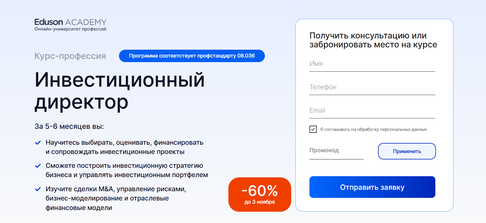- ✅ Официальный сайт: eduson.academy
- 💸 Цена обучения: от 137 196 ₽ (скидка 60%).
- 💳 Рассрочка: беспроцентная на 12 месяцев от 11 433 ₽/мес, скидка 5% за оплату онлайн.
- 📚 Формат: онлайн курсы, видеоуроки, кейсы, тренажёры, домашние задания, поддержка куратора.
- ⏳ Продолжительность: 5–6 месяцев.
- 📜 Документ: диплом о профессиональной переподготовке установленного образца.
- 📝 Трудоустройство: помощь с резюме, курс по карьере, отправка анкет партнёрам («Сбер», МТС, «М.Видео»).
- 🔷 Для кого подходит курс: аналитикам, финансистам, бухгалтерам, экономистам, топ-менеджерам и владельцам бизнеса, которые хотят развиваться в сфере инвестиций и управления капиталом.
Особенности:
Программа профессиональной переподготовки помогает освоить управление инвестиционными портфелями, финансовыми инструментами и стратегиями инвестирования. Обучение проходит в удобном формате с гибким графиком, доступно из любой точки мира. В процессе студенты изучают тему инвестиций, оценку проектов и управление рисками, а также получают практические навыки работы с реальными кейсами. Академия инвестиций Eduson даёт возможность изучить основы инвестирования, личных финансов и стратегий управления активами. После завершения курса выпускники смогут применять знания на практике, грамотно управлять инвестициями и повышать доходность проектов.
Чему учатся студенты:
- Разрабатывать инвестиционные стратегии бизнеса и управлять капиталом.
- Проводить оценку инвестиционных проектов и анализ финансовых рисков.
- Создавать бизнес-модели и финансовые прогнозы в Excel и Google Таблицах.
- Сопровождать сделки M&A и due diligence.
- Понимать структуру фондовых и финансовых рынков, анализировать рынок ценных бумаг.
- Оценивать эффективность инвестиций (IRR, NPV, XIRR).
Преподаватели:
- Оксана Дажун — основатель «Dajun Consulting», официальный спикер Сколково и Альфа-Банка.
- Азиза Улугова — преподаватель НИУ ВШЭ, заместитель финансового директора в медиа-холдинге.
- Павел Вешаев — основатель FinHelp, более 16 лет опыта в инвестициях и финансах.
- Кирилл Шишаев — победитель премии «Трекер года», преподаватель НИУ ВШЭ, эксперт в финансовом моделировании.
- Екатерина Плясунова — финансовый консультант, экс-руководитель X5 и Unilever.
- Сергей Васильев — венчурный партнёр Friendly VC, член клуба менторов «Сколково».
- Александр Зеленцов — член ACCA, CFA, финансовый директор ADM-ASTER.
Преимущества:
- Соответствие профстандарту 08.036 «Специалист по работе с инвестиционными проектами».
- Интерактивное обучение с 420 уроками, 60 тренажёрами и 29 бизнес-кейсами.
- Поддержка личного куратора на протяжении всего обучения.
- Официальный диплом и возможность оформить налоговый вычет 13%.
- Доступ к материалам курса навсегда и бесплатные обновления.
- Реальные кейсы и практика от экспертов Deloitte, Московской Биржи и Ростеха.
- Помощь с трудоустройством и карьерным развитием.
- Актуальные знания для начинающих и опытных инвесторов, желающих повысить уровень финансовой грамотности.
Отзывы учеников:
Выпускники отмечают удобный формат обучения, поддержку кураторов и актуальность программы. Многие подчеркивают, что курс помогает понять принципы управления инвестициями, личными финансами и формировать пассивный доход. Отдельно хвалят практические задания, которые позволяют применить знания на реальных проектах. Студенты отмечают рост профессиональных навыков и карьерные результаты после окончания курса.
Перейти на официальный сайт курса2. 🏆 Инвестиционный директор — Московская Бизнес Академия
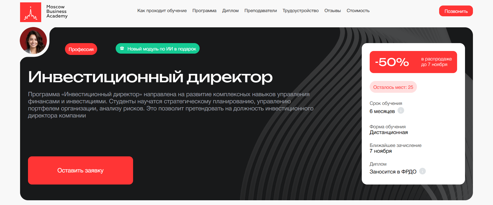- ✅ Официальный сайт: moscow.mba
- 💸 Стоимость обучения: со скидкой 50% - 149 000 ₽ при единовременной оплате.
- 💳 Рассрочка: от 8 277 ₽/мес до 18 месяцев без переплаты, первый платеж через месяц.
- 📚 Формат: дистанционное обучение, включает видеолекции, практические задания, тесты и индивидуальные проекты с обратной связью от преподавателей.
- ⏳ Продолжительность: 6 месяцев.
- 📜 Документ: диплом о профессиональной переподготовке, заносится в ФРДО.
- 📝 Трудоустройство: помощь в составлении резюме, оформлении портфолио и подготовке к собеседованию. 65% выпускников находят работу в течение 3 месяцев.
- 🔷 Для кого подходит курс: для финансовых аналитиков, предпринимателей и начинающих инвесторов, желающих повысить уровень инвестиционной грамотности и освоить управление капиталом.
Особенности:
Программа разработана для тех, кто хочет изучить основы инвестирования и научиться разрабатывать эффективные стратегии управления личными финансами. Обучение проходит онлайн в удобном формате, что позволяет совмещать учебу с работой и другими делами. В курс входят актуальные темы о финансовых рынках, портфельных инвестициях и оценке инвестиционных рисков. Студенты получают практические навыки по анализу рынка, созданию инвестиционных портфелей и управлению активами. Академия инвестиций регулярно обновляет программу, добавляя современные модули, включая блок по искусственному интеллекту в финансовой аналитике. Преподаватели — практикующие специалисты, что помогает адаптировать полученные знания под реальные бизнес-задачи. После прохождения курса слушатели уверенно разбираются в финансовых инструментах и стратегиях инвестирования.
Чему учатся студенты:
- Пониманию стратегий инвестирования и формированию инвестиционных портфелей;
- Оценке инвестиционных проектов и анализу финансовых активов;
- Разработке инвестиционных стратегий и управлению рисками;
- Использованию инвестиционных инструментов для увеличения пассивных доходов;
- Применению финансовых моделей и инструментов анализа рынка ценных бумаг;
- Работе с инструментами PMBoK, ROE, Value, ESG и моделью Дюпона.
Преподаватели:
- Ангелина Шам: корпоративный бизнес-психолог, кандидат наук, автор книг по психологии и коммуникации.
- Алина Садыкова: финансовый директор с опытом в СК «Система» и ПАО «Татнефть», эксперт по инвестиционному анализу и бизнес-планированию.
- Павел Лях: президент АКБ «КАУРИ», министр спорта Пермского края, преподаватель МАГУ и ПГНИУ.
Преимущества:
- Удобный формат обучения в онлайне с доступом к материалам 24/7;
- Актуальные знания о финансовых рынках и стратегиях инвестирования;
- Практические задания, приближенные к реальным бизнес-кейсам;
- Поддержка кураторов и преподавателей на всех этапах обучения;
- Диплом государственного образца с занесением в ФРДО;
- Бонусный модуль по искусственному интеллекту в сфере финансов;
- Возможность вернуть 13% от стоимости обучения через налоговый вычет;
- Карьерная поддержка после завершения курса.
Отзывы учеников:
Студенты отмечают высокий уровень преподавателей, структурированный график обучения и большое количество практических заданий. Многие подчеркивают, что обучение помогает развить инвестиционную грамотность и уверенность в управлении личными финансами. Выпускники отмечают, что полученные знания позволяют успешно применять инвестиционные стратегии на фондовых рынках и повышать доходность своих портфелей.
Перейти на официальный сайт курса3. 🏆 Инвестиционный директор — Академия SF Education
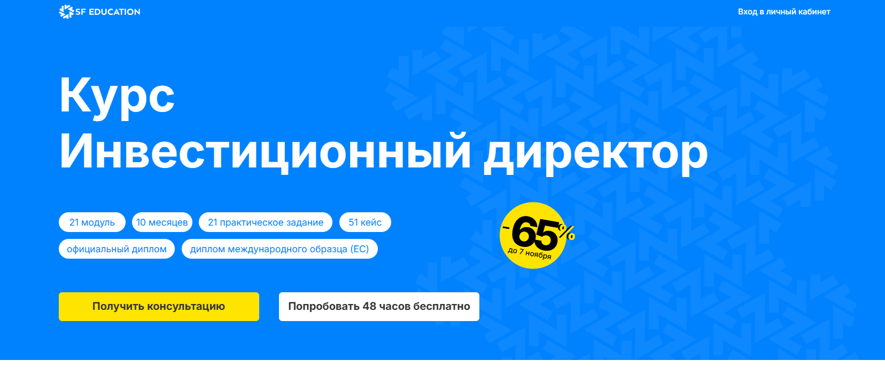- ✅ Официальный сайт: sf.education
- 💸 Цена: от 63 000 ₽, скидка до 65 %.
- 💳 Рассрочка: от 5 250 ₽/мес до 18 месяцев без переплат, первый взнос через месяц.
- 📚 Формат: онлайн обучение, вебинары, практические задания, тесты, сквозной проект и кейсы из реального бизнеса.
- ⏳ Продолжительность: 10 месяцев, 21 модуль, 810+ часов занятий и практики.
- 📜 Документ: официальный диплом международного образца (ЕС) и сертификат HISTES.
- 📝 Трудоустройство: карьерный центр помогает с резюме, подбором вакансий и подготовкой к собеседованиям.
- 🔷 Для кого подходит курс: для начинающих инвесторов, экономистов, аналитиков, бухгалтеров и всех, кто хочет развиваться в сфере инвестиций и управлении капиталом.
Особенности:
Программа сфокусирована на практическом обучении стратегиях инвестирования и управлении финансовыми активами. Обучение проходит онлайн и подходит под любое удобное расписание. Каждый студент создаёт собственные финансовые модели и портфель инвестиций, изучает основы инвестирования и управление рисками. Обучение проходит под руководством экспертов из сферы инвестиций, что помогает освоить реальные подходы профессиональных инвесторов. Академия SF Education использует современный формат обучения с постоянной обратной связью и личным куратором. После завершения курса выпускники получают востребованные навыки и диплом международного уровня, подтверждающий квалификацию в управлении инвестиционными стратегиями.
Чему учатся студенты:
- Разрабатывать и внедрять инвестиционные стратегии и модели
- Проводить инвестиционный анализ и оценку инвестиционных проектов
- Управлять инвестиционными портфелями и капиталом
- Анализировать финансовые рынки и инструменты
- Понимать основы финансовой грамотности и пассивных инвестиций
- Применять современные методы оценки стоимости активов
- Разрабатывать стратегию управления рисками и финансовыми целями
Преподаватели:
- Михаил Афонин — Основатель и CEO VosCap
- Влас Лёзин — ex-Vice President Goldman Sachs
- Антон Якушин — ex-Senior Associate EY
- Ринат Гилядов — Director, Valuation and Transaction Advisory Services
Преимущества:
- Международная аккредитация от Financial Modeling Institute (FMI) и HISTES
- Обучение проходит в удобном онлайн формате с доступом к чату и кураторам
- 48 часов бесплатного доступа ко всем материалам курса
- Помощь в построении карьеры и выходе на позиции инвестиционного директора
- Практические кейсы и проекты из сферы инвестиций и финансовых рынков
- Навыки в управлении личными инвестициями и анализе фондовых рынков
- Навсегда сохраняется доступ к материалам курса и обновлениям программы
Отзывы учеников:
Студенты отмечают понятный формат обучения, практическую направленность и высокий уровень преподавателей. Отзывы подчеркивают, что курс помогает повысить финансовую грамотность, научиться управлять личными финансами и грамотно инвестировать. Многие выпускники смогли улучшить свои доходы и найти работу в сфере инвестиций после прохождения программы.
Перейти на официальный сайт курса4. Инвестиционный директор (CIO): лидер инвестиционного направления — Moscow Business School
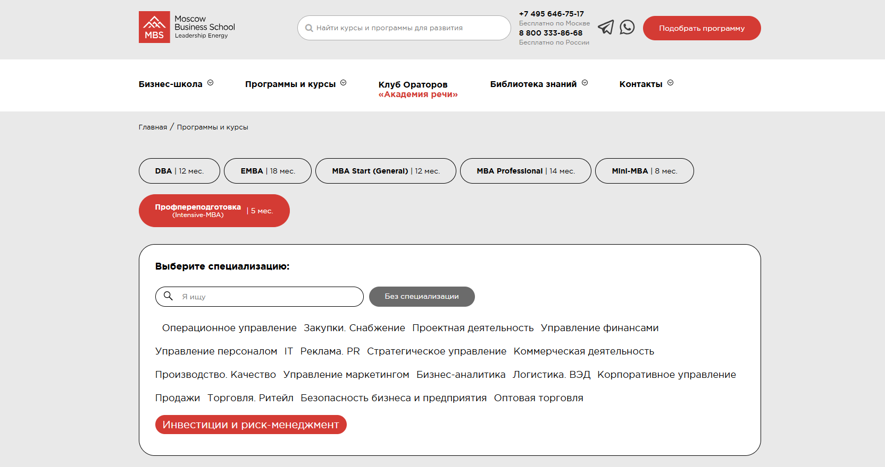- ✅ Официальный сайт: mbschool.ru
- 💸 Цена обучения: 139 000 ₽, при оплате в течение 3 дней — скидка 15%, итоговая стоимость 118 150 ₽.
- 💳 Рассрочка: 5 792 ₽/мес на 24 месяца.
- 📚 Формат: очно и онлайн, видеоуроки, тесты, разбор кейсов, вебинары, факультативные семинары, доступ к электронной библиотеке.
- ⏳ Продолжительность: 5 месяцев.
- 📜 Документ: диплом о профессиональной переподготовке государственного образца, сертификат Moscow Business School и приложение Diploma Supplement.
- 📝 Трудоустройство: карьерное консультирование и рекомендации по трудоустройству.
- 🔷 Для кого подходит курс: директорам, предпринимателям, руководителям отделов, специалистам, начинающим инвесторам и тем, кто хочет развить навыки управления капиталом.
Особенности:
Программа обучения направлена на развитие практических навыков в сфере инвестиций и управления капиталом. Студенты изучают принципы стратегий инвестирования, учатся анализировать финансовые рынки и оценивать инвестиционные портфели. Обучение проходит в удобном формате — очно или онлайн, с гибким графиком обучения. Moscow Business School предлагает безлимитный доступ к бесплатным курсам и краткосрочным программам, что помогает повысить уровень инвестиционной грамотности и освоить стратегии управления активами. Участники получают доступ к бизнес-клубу MBS, где проходят встречи с опытными инвесторами и экспертами. Программа подходит для тех, кто стремится к успешному инвестированию и уверенно управляет личными финансами. После завершения курса выпускники получают диплом, подтверждающий квалификацию в сфере инвестиций.
Чему учатся студенты:
- Понимать основы инвестирования и управления инвестиционными портфелями;
- Анализировать финансовые инструменты и рынок ценных бумаг;
- Разрабатывать инвестиционные стратегии и оценивать инвестиционные риски;
- Формировать индивидуальный инвестиционный портфель и определять риск-профиль инвесторов;
- Использовать инструменты инвестиционного анализа для принятия решений;
- Планировать личные инвестиции и достигать финансовых целей;
- Управлять пассивными инвестициями и капиталом компании.
Преподаватели:
- Родин Александр Юрьевич — кандидат экономических наук, эксперт в области оценки бизнеса и коммерческой недвижимости, консультант и бизнес-тренер.
- Наумова Виктория Анатольевна — эксперт по корпоративным финансам и МСФО, член ассоциации бухгалтеров ACCA.
Преимущества:
- Обучение проходит онлайн или очно, с возможностью выбора формата обучения;
- Гибкий график обучения, позволяющий совмещать работу и учёбу;
- Доступ к закрытому бизнес-клубу выпускников и инвесторов;
- Безлимитный доступ к бесплатным курсам и базе знаний школы;
- Практические задания и кейсы, основанные на реальных инвестиционных ситуациях;
- Поддержка куратора и консультации преподавателей;
- Официальный диплом и международное приложение к нему;
- Карьерное сопровождение и рекомендации по трудоустройству.
Отзывы учеников:
Студенты Moscow Business School отмечают высокий уровень преподавателей, качественную подачу материала и актуальность тем по инвестициям и управлению финансами. Многие выпускники подчеркивают, что курс помог им систематизировать знания, научиться применять инвестиционные стратегии и развить навыки финансового анализа. Особенно ценят гибкий формат обучения и возможность общения с опытными экспертами в сфере инвестиций.
Перейти на официальный сайт курса5. Школа инвестиций — SF Education
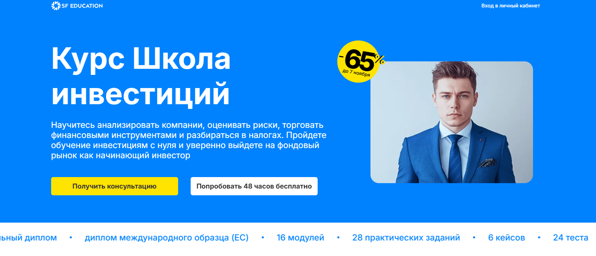- ✅ Официальный сайт: sf.education
- 💸 Цена обучения: от 38 500 ₽, скидка до 65 %.
- 💳 Рассрочка: от 3 208 ₽/мес на 18 месяцев, первый платёж через месяц, без переплат.
- 📚 Формат: онлайн курсы с видеоуроками, практическими заданиями, вебинарами и кейсами по инвестиционным стратегиям.
- ⏳ Продолжительность: 4 месяца, 16 модулей, более 300 часов обучения.
- 📜 Документ: международный диплом ЕС от HISTES и лицензия на образовательную деятельность № Л035−01 271−78/00177 402.
- 📝 Трудоустройство: карьерный центр, индивидуальный карьерный трек, помощь в составлении резюме и собеседованиях.
- 🔷 Для кого подходит курс: для начинающих инвесторов, специалистов в сфере финансов и трейдеров, которые хотят развить навыки управления капиталом и личными инвестициями.
Особенности:
Программа помогает изучить стратегии инвестирования и основы финансовых рынков с нуля. Обучение проходит онлайн, что делает формат обучения удобным для тех, кто хочет совмещать учёбу с работой. Студенты развивают навыки анализа рынка и управления личными финансами, изучают инвестиционные инструменты и принципы формирования портфеля. Каждый модуль курса сопровождается практическими заданиями, кейсами и тестами, которые позволяют закрепить знания. В процессе обучения можно использовать демо-счета для тренировки и создания инвестиционных портфелей. Курс направлен на повышение инвестиционной грамотности и формирование системного подхода к управлению активами. Выпускники уверенно применяют полученные знания в сфере инвестиций и создают пассивные источники дохода.
Чему учатся студенты:
- Изучают основы инвестирования и анализ финансовых активов.
- Понимают принципы управления личными инвестициями и капиталом.
- Осваивают оценку инвестиционных рисков и инвестиционный анализ.
- Разрабатывают инвестиционные стратегии и создают сбалансированные портфели.
- Используют технические инструменты для анализа фондовых рынков.
- Учатся применять налоговые льготы и рассчитывать доходность активов.
- Разбираются в работе брокеров и платформ для трейдинга и инвестиций.
Преподаватели:
- Влас Лёзин — ex-Vice President Goldman Sachs, эксперт по инвестиционным стратегиям.
- Александр Вальцев — основатель SF Education, специалист по управлению инвестиционными проектами.
- Ольга Коношевская — независимый финансовый советник, консультант по личным инвестициям.
- Максим Шеин — главный инвестиционный стратег БКС, управляющий активами.
Преимущества:
- Обучение проходит онлайн в гибком графике обучения.
- Курс сочетает 80 % практики и реальные кейсы по управлению капиталом.
- Выдается международный диплом и возможность подтверждения квалификации.
- Поддержка кураторов и экспертов с опытом в сфере инвестиций.
- Доступ к курсу и обновлениям сохраняется навсегда.
- Практическая отработка стратегий инвестирования на демо-счетах.
- Карьерный центр помогает выпускникам трудоустроиться и развить навыки в инвестиционной сфере.
Отзывы учеников:
Выпускники отмечают высокий уровень преподавателей и практическую направленность занятий. Многие студенты подчеркивают, что обучение помогло развить финансовую грамотность, научиться анализу рынка и управлению рисками. Отмечают удобный формат, возможность учиться в онлайне и поддержку наставников. Большинство выпускников после прохождения курса смогли повысить доходность личных инвестиций и начать зарабатывать на фондовых рынках.
Перейти на официальный сайт курса6. Управление в сфере инвестиций (MBA) — Московская Бизнес Академия
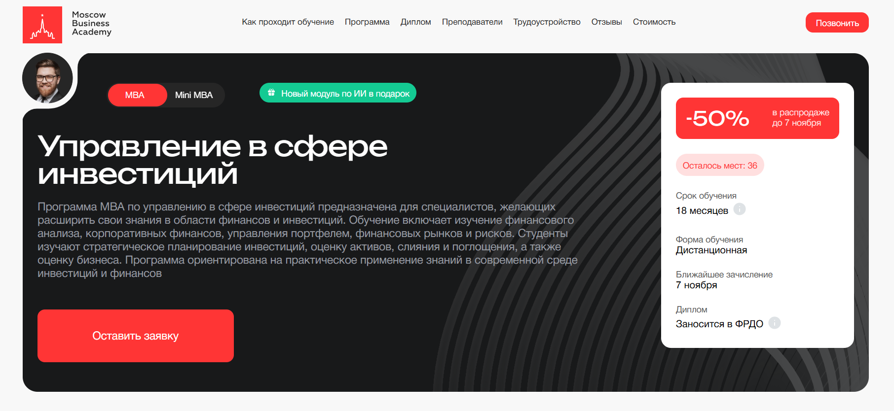- ✅ Официальный сайт: moscow.mba
- 💸 Стоимость обучения: от 355 000 ₽ со скидкой 50%.
- 💳 Рассрочка: от 9 861 ₽/мес до 36 месяцев без переплаты, первый платеж через месяц.
- 📚 Формат обучения: дистанционный — видеолекции, тесты, домашние задания, индивидуальные проекты, обратная связь от преподавателей.
- ⏳ Продолжительность: 18 месяцев.
- 📜 Документ: международный диплом «Master of Business Administration», заносится в ФРДО.
- 📝 Трудоустройство: карьерные консультации, помощь в составлении резюме и портфолио, сопровождение при собеседованиях.
- 🔷 Для кого подходит курс: финансовым аналитикам, консультантам, менеджерам фондов и тем, кто хочет развить навыки управления личными инвестициями и инвестиционными портфелями.
Особенности:
Программа MBA по управлению в сфере инвестиций разработана для тех, кто стремится углубить знания о финансовых рынках, стратегиях инвестирования и управлении капиталом. Обучение проходит онлайн в удобном формате, что позволяет совмещать учебу с работой. Студенты изучают оценку инвестиционных проектов, управление рисками и анализ фондовых рынков. Курс охватывает основы финансовой и инвестиционной грамотности, подходы к формированию личных инвестиций и портфельных решений. По завершении можно повысить квалификацию с дополнительным модулем по искусственному интеллекту для финансовой аналитики. Выпускники отмечают высокий уровень практических заданий и современную структуру учебного процесса, ориентированную на реальные бизнес-кейсы.
Чему учатся студенты:
- Понимать стратегические процессы и принципы управления инвестициями
- Проводить инвестиционный анализ и оценку финансовых активов
- Разрабатывать инвестиционные стратегии и управлять портфелем
- Анализировать рынок ценных бумаг и финансовые инструменты
- Оценивать инвестиционные риски и создавать сбалансированные инвестиционные портфели
- Использовать знания в сфере личных финансов и пассивных инвестиций для достижения финансовых целей
Преподаватели:
- Динар Биктимиров — предприниматель, бизнес-тренер, эксперт в производственном менеджменте и коучинге.
- Алексей Могилёв — преподаватель экономики и менеджмента, журналист, консультант по работе с клиентами.
- Валерия Романова — директор по управлению проектами в ВТБ Факторинг.
Преимущества:
- Актуальная программа, обновленная в 2025 году
- Международная аккредитация и диплом установленного образца
- 70% программы — практика и реальные кейсы
- Доступ к материалам из любой точки мира
- Удобный график обучения и индивидуальный темп
- Бонусный модуль по ИИ для финансовой аналитики
- Помощь в трудоустройстве и карьерное сопровождение
- Преподаватели — практикующие эксперты ведущих бизнес-школ
Отзывы учеников:
Выпускники Московской Бизнес Академии отмечают, что обучение проходит в удобном формате и помогает развить инвестиционную грамотность. Студенты ценят практическую направленность курса, актуальные знания по фондовым рынкам и стратегиях инвестирования, а также поддержку кураторов. Многие после прохождения курса улучшили финансовые результаты и продвинулись по карьерной лестнице.
Перейти на официальный сайт курса7. Управление финансами MBA Эксперт — Академия Eduson
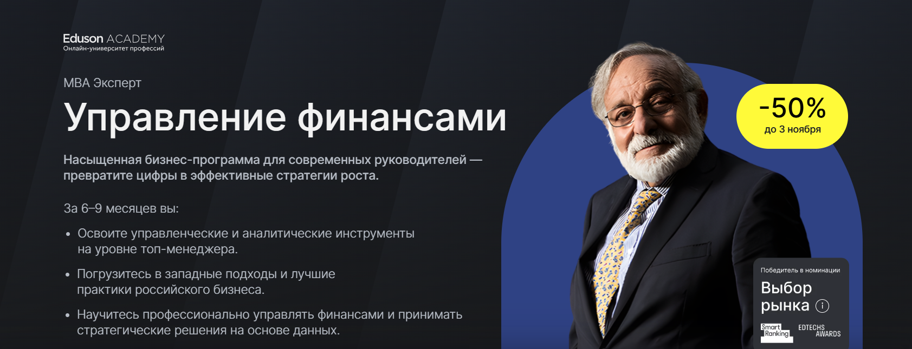- ✅ Официальный сайт: eduson.academy
- 💸 Цена обучения: от 225 000 ₽ при оплате со скидкой 50%.
- 💳 Рассрочка: беспроцентная рассрочка до 12 месяцев от 18 750 ₽/мес, с возможностью оформить налоговый вычет 13%.
- 📚 Формат: онлайн-обучение, 544 интерактивных урока, 50+ тестов, 40+ бизнес-кейсов, практические задания, тренажёры и шаблоны. Доступ бессрочный.
- ⏳ Продолжительность: 6–9 месяцев.
- 📜 Документ: диплом о профессиональной переподготовке государственного образца и диплом Академии Eduson, подтверждённый «Сколково».
- 📝 Трудоустройство: карьерная поддержка, рекомендации работодателям, повышение дохода до 60% после окончания курса.
- 🔷 Для кого подходит курс: предприниматели, генеральные директора, топ-менеджеры, финансисты и начинающие специалисты, стремящиеся развить финансовую грамотность и навыки управления инвестициями.
Особенности:
Программа сочетает российский и международный опыт управления финансами. Студенты изучают стратегическое планирование, управление рисками и формирование инвестиционных стратегий. Обучение проходит в удобном онлайн-формате с гибким графиком, что позволяет совмещать учёбу с работой. В рамках курса рассматриваются современные инвестиционные инструменты, основы финансовой аналитики и управление активами. Академия делает акцент на практике: участники решают реальные задачи, работают с инвестиционными портфелями и анализируют рынок ценных бумаг. Курс помогает сформировать профессиональные навыки управления личными финансами, научиться строить стратегию пассивных инвестиций и развивать инвестиционную грамотность.
Чему учатся студенты:
- Разрабатывать финансовую и инвестиционную стратегию бизнеса
- Проводить инвестиционный анализ и оценку инвестиционных проектов
- Управлять денежными потоками и активами компании
- Создавать индивидуальный инвестиционный портфель и управлять капиталом
- Понимать принципы фондовых рынков и основы инвестирования
- Использовать финансовые инструменты для снижения рисков и повышения доходности
- Анализировать рынок ценных бумаг и прогнозировать развитие финансовых активов
Преподаватели:
- Ицхак Адизес — мировой эксперт по управлению, основатель Института Адизеса
- Павел Вешаев — управленец и финансист в B2B-секторе, гостиничном бизнесе и недвижимости
- Виталий Полехин — президент Международной организации инвесторов INVESTORO
- Елена Масолова — предприниматель, входит в топ-30 по версии Forbes
- Оксана Дажун — основатель компании «Dajun Consulting»
- Виктор Бурмистров — экс-вице-президент по финансам в Maximum Education
- Сергей Елин — основатель аудиторско-консалтинговой группы «АИП»
- Игорь Рызов — бизнес-тренер по переговорам, обучал сотрудников «Сбера» и «Газпрома»
Преимущества:
- Обновлённая в 2025 году программа, отражающая актуальные тенденции финансовых рынков
- Гибкий онлайн-формат обучения с доступом к материалам без ограничений по времени
- Практические задания на основе реальных кейсов и задач по инвестициям
- Поддержка куратора и экспертов на всём протяжении обучения
- Возможность применять полученные знания сразу в работе и личных инвестициях
- Два официальных диплома — российского образца и Академии Eduson
- Партнёрство с «Сколково» и ведущими финансовыми организациями
- Рассрочка без переплат и возврат 13% через налоговый вычет
Отзывы учеников:
Выпускники отмечают практическую направленность программы, удобный формат обучения и высокий профессионализм преподавателей. Многие подчеркивают, что курс помог им повысить доход, разобраться в теме инвестиций и уверенно управлять личными финансами. Студенты также хвалят актуальные материалы, живые примеры из бизнеса и гибкий график обучения, который позволяет проходить курс в любое удобное время.
Перейти на официальный сайт курса8. Инвестиционный аналитик — Академия Eduson
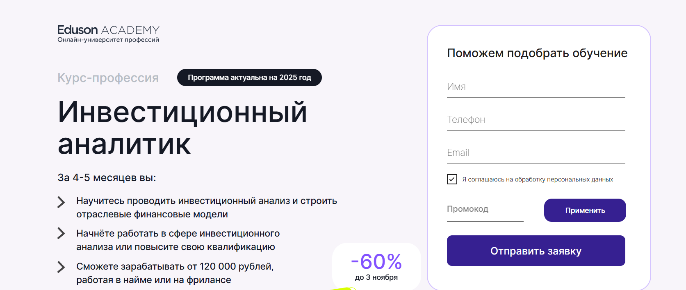- ✅ Официальный сайт: eduson.academy
- 💸 Цена: от 87 192 ₽.
- 💳 Рассрочка: доступна на 12 месяцев от 7 266 ₽/мес без процентов, скидка 5% при оплате онлайн.
- 📚 Формат: онлайн курсы, включающие 320 интерактивных уроков, 24 бизнес-кейса, 54 тренажёра, 25 практических заданий и дипломный проект.
- ⏳ Продолжительность: 4–5 месяцев обучения.
- 📜 Документ: диплом о профессиональной переподготовке государственного образца.
- 📝 Трудоустройство: 78% выпускников прошли обучение и получили работу. Резюме направляется в компании-партнёры: Сбер, МТС, М.Видео и другие.
- 🔷 Для кого подходит курс: для начинающих инвесторов, тех, кто занимается инвестициями, а также специалистов, стремящихся развить навыки управления личными финансами и инвестиционными портфелями.
Особенности:
Курс разработан Академией инвестиций Eduson по требованиям рынка ценных бумаг и более 370 вакансий инвестиционного аналитика. Обучение проходит онлайн в удобном формате, позволяющем проходить обучение по личному графику. Студенты изучают основы инвестирования, стратегии инвестирования и анализ финансовых инструментов. Программа помогает развить практические навыки управления капиталом, освоить инвестиционные стратегии и научиться оценке инвестиционных проектов. После окончания курса выпускники получают диплом, подтверждающий квалификацию, и могут начать карьеру в сфере инвестиций или развивать личные инвестиции, формируя пассивный доход. Обучение проходит с поддержкой куратора и постоянным доступом к материалам курса.
Чему учатся студенты:
- Проводить инвестиционный анализ и оценку инвестиционных проектов;
- Разрабатывать инвестиционные стратегии и управлять инвестиционными портфелями;
- Оценивать доходность и риски инвестиционных инструментов;
- Работать с финансовыми активами, отчётностью и моделями компаний;
- Применять основы финансовой грамотности и финансового анализа;
- Использовать Excel и Google Таблицы для расчёта инвестиционных показателей;
- Изучить рынок ценных бумаг, фондовых рынков и принципы управления рисками;
- Научиться формированию индивидуальных инвестиционных стратегий и управлению личными финансами.
Преподаватели:
- Оксана Дажун — основатель Dajun Consulting, эксперт по антикризисному управлению, спикер Сколково и Сбербанка;
- Азиза Улугова — преподаватель ВШЭ, заместитель финансового директора крупного медиа-холдинга;
- Павел Вешаев — основатель FinHelp, финансист и консультант с 16+ годами опыта в инвестициях;
- Кирилл Шишаев — бизнес-тренер по финансовому моделированию, преподаватель НИУ ВШЭ;
- Екатерина Плясунова — независимый финансовый консультант, экс-финансовый директор X5 и Unilever;
- Александр Зеленцов — член ACCA, обладатель сертификата CFA, финансовый директор ADM-ASTER;
- Сергей Васильев — венчурный партнёр фонда Friendly VC, член клуба менторов «Сколково».
Преимущества:
- Удобный формат обучения и доступ к материалам навсегда;
- Формирование навыков инвестиционного анализа и управления инвестициями;
- Практические задания, помогающие освоить тему инвестиций;
- Профессиональная помощь кураторов и преподавателей;
- Возможность совмещать обучение с работой или личными проектами;
- Диплом о профессиональной переподготовке, подтверждающий уровень знаний;
- Поддержка трудоустройства и помощь в поиске проектов в сфере инвестиций;
- Возможность оформить налоговый вычет и вернуть часть стоимости обучения.
Отзывы учеников:
Выпускники отмечают удобный график обучения, качественные материалы и понятную подачу темы инвестиций. Многие упоминают, что благодаря курсу смогли улучшить финансовую грамотность, научились анализу рынка и начали зарабатывать на инвестициях. Студенты также выделяют поддержку кураторов и практическую направленность программы, помогающую применять знания на реальных кейсах.
Перейти на официальный сайт курса9. Эксперт в области привлечения инвестиций — Московская Бизнес Академия
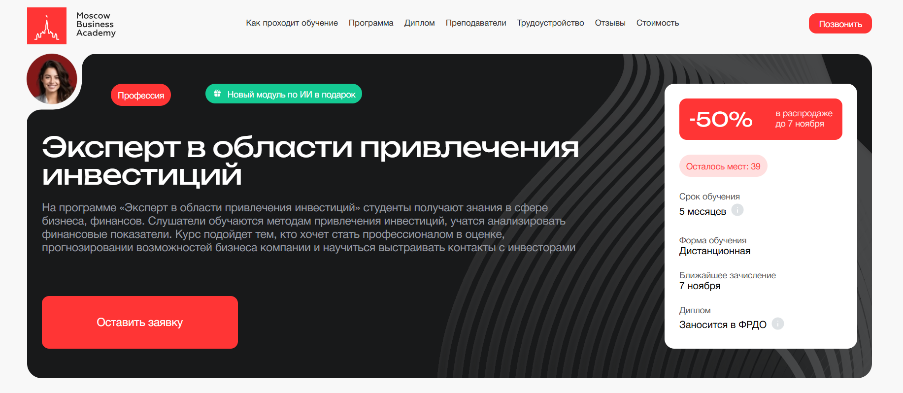- ✅ Официальный сайт: moscow.mba
- 💸 Цена обучения: от 149 000 ₽ (со скидкой 50%).
- 💳 Рассрочка: от 6 208 ₽/мес до 24 месяцев без переплаты, первый платёж через месяц.
- 📚 Формат: дистанционные онлайн-курсы, видеолекции, практические задания, тесты, обратная связь от преподавателей и поддержка кураторов.
- ⏳ Продолжительность: 5 месяцев.
- 📜 Документ: диплом о профессиональной переподготовке, заносится в ФРДО.
- 📝 Трудоустройство: помощь в составлении резюме, подготовке к собеседованиям и поиске вакансий.
- 🔷 Для кого подходит курс: аналитикам, студентам и выпускникам финансовых вузов, а также начинающим инвесторам, которые хотят развить навыки управления личными инвестициями и инвестиционными портфелями.
Особенности:
Программа даёт возможность изучить стратегиях инвестирования и освоить принципы анализа финансовых рынков. Обучение проходит онлайн в удобном формате, что позволяет совмещать учебу и работу. Курс направлен на развитие инвестиционной грамотности и навыков управления капиталом. Программа включает реальные кейсы, индивидуальные проекты и практические задания, которые помогают закрепить знания. Студенты учатся работать с финансовыми инструментами, оценивать инвестиционные риски и формировать инвестиционные стратегии. По завершении курса слушатели получают актуальные знания, востребованные в сфере инвестиций. Дополнительно предоставляется модуль по ИИ для ускорения анализа данных и финансовых показателей. Обучение сопровождается карьерными консультациями и поддержкой кураторов.
Чему учатся студенты:
- Анализу финансовых активов и оценке инвестиционных проектов
- Управлению инвестиционными портфелями и стратегиями инвестирования
- Разработке инвестиционных решений и прогнозированию доходов
- Применению инструментов бюджетирования, SWOT и PEST-анализа
- Управлению рисками и принятию решений на фондовых рынках
- Использованию моделей ROE и DuPont для анализа эффективности
- Работе с цифровыми активами, криптовалютами и инновационными инвестициями
Преподаватели:
- Алина Садыкова — финансовый директор, аналитик, специалист по бизнес-планам, опыт работы в СК «Система» и ПАО «Татнефть».
- Павел Лях — президент АКБ «КАУРИ», преподаватель МАГУ и ПГНИУ, президент Федерации баскетбола Пермского края.
- Анастасия Тодовянская — кандидат экономических наук, эксперт в финансовом менеджменте и оценке рисков.
Преимущества:
- Обучение проходит онлайн — доступ из любой точки мира
- 70% программы посвящено практике и реальным задачам
- Обновлённая в 2025 году программа соответствует современным требованиям рынка
- Диплом государственного образца с занесением в ФРДО
- Бонусный модуль по искусственному интеллекту в сфере финансов
- Карьерная поддержка до трудоустройства
- Рассрочка без переплаты и возможность вернуть 13% налоговым вычетом
- Высокая востребованность выпускников — 65% находят работу через 3 месяца
Отзывы учеников:
Выпускники Московской Бизнес Академии отмечают профессионализм преподавателей, удобный график обучения и доступность материала. Многие подчёркивают, что программа помогла им повысить финансовую грамотность, научиться анализировать рынок ценных бумаг и выстроить собственные инвестиционные стратегии. Студенты особенно выделяют практическую направленность курса и возможность совмещать обучение с работой.
Перейти на официальный сайт курса10. Управление инвестиционным проектом – Русская Школа Управления
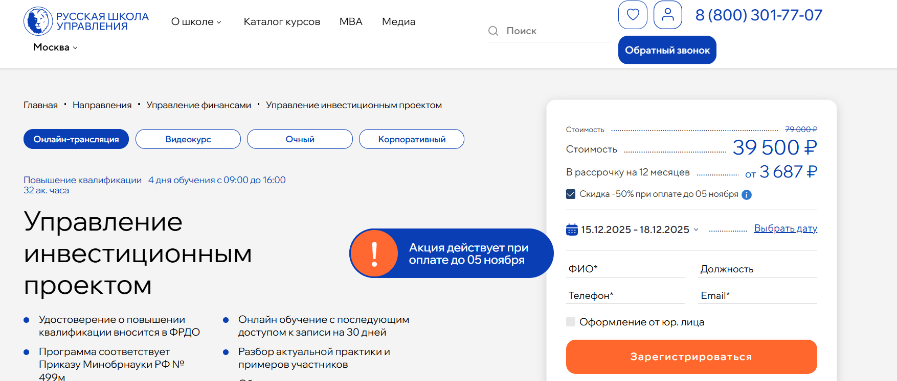- ✅ Официальный сайт: uprav.ru
- 💸 Цена обучения: от 39 500 ₽ до 79 000 ₽ в зависимости от формата.
- 💳 Рассрочка: доступна до 12 месяцев без переплат от 3 687 ₽/мес.
- 📚 Формат: очный, онлайн-трансляция и видеокурс; занятия, тесты, кейсы, домашние задания и доступ к записям лекций.
- ⏳ Продолжительность: 32 академических часа, 4 дня обучения с 09:00 до 16:00.
- 📜 Документ: удостоверение о повышении квалификации государственного образца, информация вносится в ФРДО.
- 📝 Трудоустройство: повышение квалификации для карьерного роста и работы с инвестиционными проектами.
- 🔷 Для кого подходит курс: для руководителей, специалистов и компаний, работающих в сфере инвестиций и управления капиталом.
Особенности:
Обучение проходит на территории ВДНХ и доступно в онлайн-формате, что позволяет проходить занятия в любое удобное время. Программа включает актуальные методы управления инвестициями, оценку инвестиционных проектов и стратегий инвестирования. Курс помогает развить навыки анализа финансовых инструментов, управления рисками и формирования инвестиционного портфеля. Студенты изучают основы инвестиционной грамотности и финансовых рынков, что помогает эффективно управлять личными инвестициями и капиталом. После завершения обучения слушатели получают бессрочный доступ к материалам и поддержку преподавателей. Такой формат обучения позволяет сочетать профессиональное развитие и работу, что делает курс удобным для начинающих инвесторов и специалистов в сфере инвестиций.
Чему учатся студенты:
- Разрабатывать инвестиционные тизеры и бизнес-планы для привлечения инвесторов.
- Проводить конкурентный анализ и анализ ключевых факторов успеха.
- Оценивать финансовую эффективность и привлекательность проектов.
- Использовать методики управления рисками и финансовыми активами.
- Создавать финансовые модели и управлять инвестиционным портфелем.
- Применять инструменты анализа рынка ценных бумаг и фондовых рынков.
Преподаватели:
- Лукинский Дмитрий Георгиевич — эксперт в области корпоративных финансов, аудита и инвестиционного анализа.
- Ильдеменов Андрей Сергеевич — кандидат экономических наук, доцент, тренер-консультант по управлению и финансовому планированию.
- Стерхова Светлана Александровна — кандидат экономических наук, доцент РАНХиГС, сертифицированный тренер-консультант по управлению проектами.
Преимущества:
- Программа соответствует приказу Минобрнауки РФ №499м.
- Обучение проходит с практическими кейсами и разбором реальных проектов.
- 70% времени уделяется практике и 30% — теории.
- Курс помогает повысить инвестиционную и финансовую грамотность.
- Возможность учиться в гибком формате с бессрочным доступом к материалам.
- Преподаватели — действующие эксперты и консультанты ведущих компаний.
- 85% выпускников возвращаются для прохождения других программ.
Отзывы учеников:
Слушатели отмечают высокое качество преподавания, удобный формат обучения и практическую направленность программы. Особенно ценят возможность изучить инвестиционные инструменты и реальные кейсы, что помогает в управлении личными финансами и инвестиционными проектами. Отмечают доступную подачу материала и профессиональную поддержку преподавателей.
Перейти на официальный сайт курса11. Инвестиционный аналитик — Русская Школа Управления
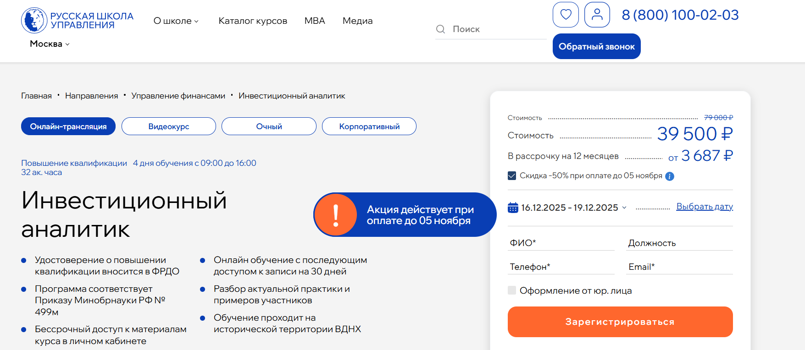- ✅ Официальный сайт: uprav.ru
- 💸 Цена обучения: от 39 500 ₽ до 79 000 ₽ в зависимости от формата.
- 💳 Рассрочка: до 12 месяцев без переплат от 3 687 ₽/мес.
- 📚 Формат: очное, онлайн или видеокурс; включает лекции, практические задания, кейсы и тесты с обратной связью.
- ⏳ Продолжительность: 32 академических часа (4 дня по графику обучения с 09:00 до 16:00).
- 📜 Документ: удостоверение о повышении квалификации, вносимое в ФРДО.
- 📝 Трудоустройство: повышение профессиональных навыков для карьерного роста и привлечения инвесторов.
- 🔷 Для кого подходит курс: для руководителей, специалистов, начинающих инвесторов и компаний, занимающихся инвестициями и управлением капиталом.
Особенности:
Обучение проходит онлайн и очно на территории ВДНХ, что делает курс удобным для специалистов из разных регионов. Программа разработана по Приказу Минобрнауки РФ №499м и обеспечивает глубокие знания в сфере инвестиций и управления активами. Студенты изучают современные инвестиционные стратегии, методы анализа финансовых инструментов и управления рисками. После завершения программы слушатели смогут уверенно управлять инвестиционными портфелями и принимать решения, направленные на рост доходов компании. Бессрочный доступ к материалам помогает закрепить знания и развивать финансовую грамотность на практике. Курс сочетает теорию и практику, что особенно ценно для тех, кто стремится научиться успешному инвестированию и оценке инвестиционных проектов.
Чему учатся студенты:
- Проводить анализ эффективности бизнеса и оценку инвестиционных проектов
- Изучать методы анализа денежных потоков и структуры капитала
- Разрабатывать финансовые модели и прогнозировать прибыль
- Использовать инструменты анализа фондовых рынков и финансовых активов
- Формировать инвестиционные портфели и управлять рисками
Преподаватели:
- Лукинский Дмитрий Георгиевич — эксперт в области корпоративных финансов, аудита и инвестиционного анализа.
- Стерхова Светлана Александровна — кандидат экономических наук, доцент кафедры управления инновационными проектами РАНХиГС, сертифицированный тренер-консультант.
Преимущества:
- Соответствие государственным образовательным стандартам и внесение данных в ФРДО
- Бессрочный доступ к материалам и обновлениям курса
- Разбор реальных кейсов и практических ситуаций из сферы инвестиций
- Высокая оценка слушателей — рейтинг 4.9 и более 5000 выпускников
- Гибкие форматы обучения и доступность для слушателей с любым уровнем знаний
- Возможность получить консультацию преподавателя и персональную обратную связь
- Оптимальное соотношение стоимости обучения и качества преподавания
Отзывы учеников:
Слушатели отмечают профессионализм преподавателей, доступную подачу сложных тем и практическую направленность занятий. Многие подчеркивают, что курс помог разобраться в теме инвестиций, повысить инвестиционную грамотность и научиться оценивать риски. По отзывам, обучение проходит в удобном формате и помогает выстроить личные стратегии инвестирования и пассивных доходов.
Перейти на официальный сайт курса12. Инвестиционный советник — SF Education
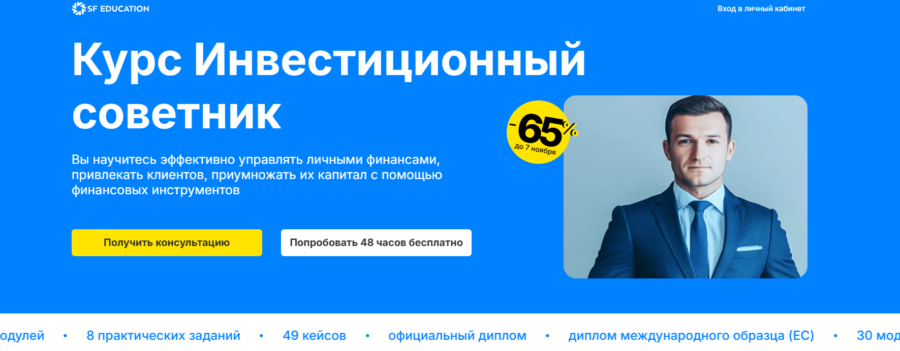- ✅ Официальный сайт: sf.education
- 💸 Цена: от 52 500 ₽
- 💳 Рассрочка: беспроцентная до 18 месяцев от 4 375 ₽/мес, первый платёж через месяц
- 📚 Формат: онлайн-курсы, видеоуроки, практические задания, тесты, вебинары и консультации с преподавателями
- ⏳ Продолжительность: 6 месяцев, 30 модулей, более 200 часов занятий
- 📜 Документ: диплом о профессиональной переподготовке международного образца (HISTES, FMI)
- 📝 Трудоустройство: карьерный центр, помощь в составлении резюме, база вакансий инвестиционных компаний
- 🔷 Для кого подходит курс: для начинающих инвесторов, специалистов в сфере инвестиций и тех, кто хочет повысить финансовую грамотность и освоить управление личными финансами
Особенности:
Обучение проходит онлайн в удобном формате с возможностью подстраивать график обучения под себя. Программа охватывает основы инвестирования, анализ финансовых рынков и практику составления инвестиционных портфелей. Студенты изучают стратегии инвестирования, управление активами и оценку инвестиционных рисков. В процессе прохождения курса особое внимание уделяется развитию инвестиционной грамотности, анализу рынка ценных бумаг и практическим навыкам управления капиталом. Программа аккредитована Financial Modeling Institute и Европейской ассоциацией HISTES, что подтверждает высокий уровень обучения. Каждый участник получает индивидуальное сопровождение куратора и доступ к чату с экспертами, что помогает эффективно проходить обучение и повышать уровень знаний в сфере инвестиций.
Чему учатся студенты:
- Формировать и управлять инвестиционными портфелями с учетом целей клиентов
- Понимать принципы фондовых рынков и работу финансовых инструментов
- Оценивать инвестиционные объекты и проводить инвестиционный анализ
- Разрабатывать индивидуальные инвестиционные стратегии и оценку активов
- Планировать личные инвестиции и создавать стратегии пассивных инвестиций
- Применять практические навыки для успешного инвестирования и управления рисками
Преподаватели:
- 12 экспертов-практиков с опытом более 9 лет в управлении активами и инвестициях
- Преподаватели с международными сертификатами FMI и опытом работы в инвестиционных компаниях
- Кураторы помогают студентам в анализе рынка и разработке инвестиционных стратегий
Преимущества:
- Современный формат обучения с гибким графиком и онлайн-доступом к материалам
- 48 часов бесплатного доступа к полному курсу
- Реальные кейсы по инвестиционным стратегиям и управлению портфелем
- Международный диплом, признанный в России и за рубежом
- Поддержка карьерного центра и помощь в трудоустройстве
- Игровая система обучения с внутренней валютой SF Coin
- Курс подходит для переквалификации и повышения квалификации
Отзывы учеников:
Выпускники отмечают удобный формат обучения и практическую направленность программы. Многие выделяют качественную подачу материала, актуальные знания о финансовых рынках и инвестиционных инструментах. Студенты подчеркивают, что курс помогает развить уверенность в управлении личными инвестициями и открыть новые карьерные возможности в сфере инвестиций.
Перейти на официальный сайт курса13. Инвестиционные стратегии и формирование портфеля — SF Education
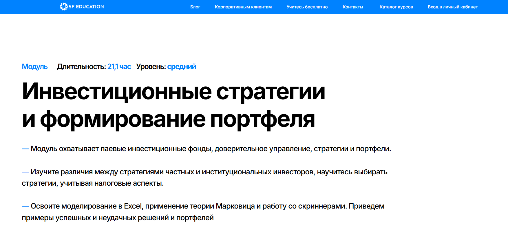
- ✅ Официальный сайт: sf.education
- 💸 Цена обучения: 9 205 ₽ при оплате сразу (скидка 10%).
- 💳 Рассрочка: от 767 ₽/мес, первый платёж через 6 месяцев, по программе Trade-In — до 50% экономии.
- 📚 Формат: онлайн курсы с видеоуроками, практическими заданиями, моделированием в Excel и тестами. Обучение проходит в асинхронном режиме.
- ⏳ Продолжительность: 21,1 час.
- 📜 Документ: удостоверение установленного образца, действительное в России и СНГ.
- 📝 Трудоустройство: подтверждение квалификации, развитие навыков анализа рынка и управление капиталом.
- 🔷 Для кого подходит курс: для начинающих инвесторов и тех, кто хочет повысить инвестиционную грамотность и научиться управлять личными финансами.
Особенности:
Программа разработана для тех, кто хочет изучить стратегии инвестирования и принципы формирования инвестиционных портфелей. Обучение проходит онлайн и доступно в любое удобное время. Курс помогает освоить основы инвестирования, анализ финансовых инструментов и построение портфеля для получения пассивного дохода. Участники изучают фондовые рынки, методы оценки активов и способы снижения рисков. Благодаря практическим заданиям студенты учатся применять полученные знания на реальных примерах. Программа подходит для тех, кто хочет повысить финансовую грамотность и уверенно управлять личными инвестициями.
Чему учатся студенты:
- Разбираться в паевых инвестиционных фондах и доверительном управлении
- Понимать различия стратегий частных и институциональных инвесторов
- Создавать и анализировать инвестиционные портфели в Excel
- Оценивать риски и доходность финансовых инструментов
- Изучать налоговые аспекты инвестирования
- Понимать стратегию автоследования и принципы управления активами
- Разбирать успешные и неудачные решения на фондовом рынке
Преподаватели:
- Ольга Коношевская — инвестиционный аналитик, независимый финансовый советник
- Ксения Бурая — интернет-брокер
- Александр Вальцев — основатель и генеральный директор SF Education
- Александр Холодов — инвестиционный аналитик в Invest Future
Преимущества:
- Гибкий формат обучения, подходящий под любой график
- Доступ к учебным материалам и инвестиционным моделям в онлайне
- Преподаватели — практикующие эксперты из ведущих компаний Goldman Sachs, ВТБ, Газпромбанк
- Развитие навыков управления инвестициями и анализу фондовых рынков
- Возможность оформить налоговый вычет 13%
- Бесплатные бонусы — подписка Литрес и сертификат на английский язык
- Удобный формат для тех, кто проходит обучение без отрыва от работы
- Поддержка начинающих инвесторов на всех этапах обучения
Отзывы учеников:
Студенты, прошедшие обучение, отмечают практическую направленность занятий и понятную подачу сложных тем. Многие отмечают, что курс помогает лучше разбираться в инвестиционных стратегиях, финансовых активах и управлении капиталом. Отдельно выделяют профессионализм преподавателей и возможность проходить обучение в удобное время без потери качества.
Перейти на официальный сайт курса14. Академия трейдинга — SF Education
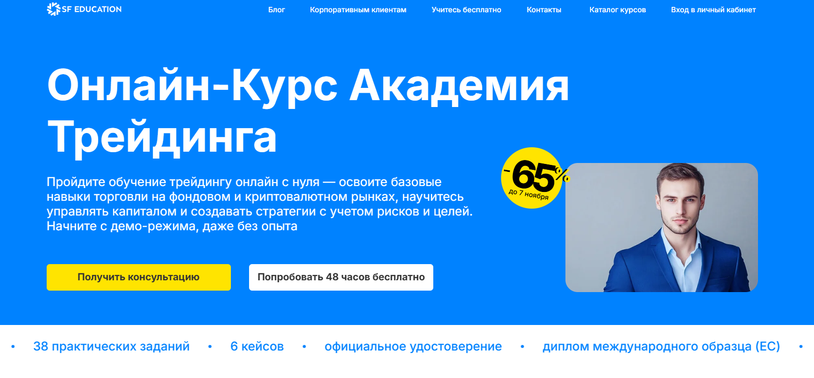- ✅ Официальный сайт: sf.education
- 💸 Цена обучения: от 30 100 ₽ со скидкой до 65% (акция).
- 💳 Рассрочка: беспроцентная на 12 месяцев от 2 508 ₽/мес, первый платеж через месяц.
- 📚 Формат: онлайн-курсы, видеоуроки, практические задания, кейсы, тесты, вебинары, консультации с преподавателями и кураторами.
- ⏳ Продолжительность: 2 месяца, 4 модуля и более 200 часов занятий.
- 📜 Документ: удостоверение о повышении квалификации и международный диплом (ЕС, HISTES).
- 📝 Трудоустройство: помощь карьерного центра, консультации HR, составление резюме и подбор вакансий трейдера.
- 🔷 Для кого подходит курс: для начинающих инвесторов и тех, кто хочет изучить стратегии инвестирования, основы финансовых рынков и управление личными инвестициями.
Особенности:
Онлайн-курс создан для тех, кто хочет освоить тему инвестиций и получить практические навыки анализа финансовых рынков. Обучение проходит в удобном формате с постоянным доступом к материалам. Студенты изучают принципы управления инвестициями, разбираются в инвестиционных стратегиях и учатся грамотно формировать инвестиционные портфели. Каждый блок содержит реальные задания, направленные на развитие инвестиционной грамотности и навыков работы с финансовыми инструментами. Программа помогает начинающим инвесторам научиться принимать решения, основанные на данных, а не эмоциях. После завершения обучения выпускники смогут уверенно действовать на фондовых рынках, используя проверенные стратегии инвестирования.
Чему учатся студенты:
- Анализировать рынок ценных бумаг и криптовалют;
- Создавать инвестиционные стратегии и оценивать их эффективность;
- Формировать инвестиционные портфели и управлять капиталом;
- Проводить инвестиционный анализ и управлять рисками;
- Использовать современные финансовые инструменты и платформы для трейдинга;
- Понимать основы финансовой грамотности и личных инвестиций;
- Работать с аналитическими сервисами TradingView, Excel, Binance, Bybit.
Преподаватели:
- Команда SF Education — эксперты с опытом работы более 9 лет в сфере инвестиций и трейдинга.
- Все преподаватели являются действующими профессиональными инвесторами и аналитиками фондовых рынков.
Преимущества:
- Курс включает реальные кейсы и практические задания;
- Современный формат обучения с гибким графиком и обратной связью;
- Международный диплом, подтверждающий квалификацию;
- Карьерная поддержка и помощь в трудоустройстве;
- Игровая система мотивации SF Coin с бонусами и наградами;
- 48 часов бесплатного доступа для ознакомления с программой;
- Доступ к обновлениям курса навсегда.
Отзывы учеников:
Студенты отмечают, что обучение проходит легко и последовательно, а преподаватели подробно объясняют сложные темы инвестиций. Большинство отзывов подчеркивает практическую направленность курса, доступность материалов и возможность применить знания для успешного инвестирования и увеличения личных доходов. Отмечают также карьерную поддержку и удобный формат обучения.
Перейти на официальный сайт курса15. Основы трейдинга и инвестиций — Нетология
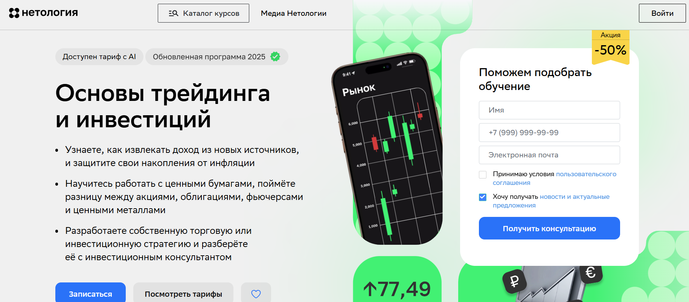- ✅ Официальный сайт: netology.ru
- 💸 Цена обучения: от 74 400 ₽ со скидкой 50%.
- 💳 Рассрочка: до 24 месяцев без переплат, от 3 264 ₽ в месяц.
- 📚 Формат: онлайн-обучение — видеолекции, квизы, практические задания, воркшопы и консультации с экспертами.
- ⏳ Продолжительность: 5 месяцев, занятия проходят после 19:00 по МСК.
- 📜 Документ: удостоверение о повышении квалификации установленного образца.
- 📝 Трудоустройство: индивидуальные консультации с финансовыми консультантами и помощь в составлении инвестиционной стратегии.
- 🔷 Для кого подходит курс: для начинающих инвесторов, трейдеров и всех, кто хочет повысить финансовую грамотность и управлять личными финансами.
Особенности:
Обучение проходит онлайн и подходит для любого уровня знаний. Программа помогает разобраться в стратегиях инвестирования и трейдинга, освоить финансовые инструменты и принципы управления капиталом. В процессе студенты изучают анализ рынка ценных бумаг, методы управления рисками и формируют инвестиционные портфели. Особое внимание уделено инвестиционному анализу, оценке инвестиционных активов и созданию личных инвестиций с учётом финансовых целей. Обучение построено в удобном формате: занятия проходят по расписанию, а материалы остаются в личном кабинете. Выпускники получают официальный документ и могут вернуть 13% налогового вычета за обучение.
Чему учатся студенты:
- Изучают основы инвестирования и принципы управления личными инвестициями
- Разрабатывают собственные инвестиционные стратегии и управляют инвестиционными портфелями
- Проводят оценку инвестиционных активов и анализ фондовых рынков
- Осваивают работу в торговом терминале QUIK и проводят сделки на демо-счёте
- Формируют навыки управления капиталом и создают стратегии пассивных инвестиций
Преподаватели:
- Виктор Тарасов — профессиональный трейдер с 1997 года, преподаватель с 2011 года, работал консультантом в ПАО «Сбербанк».
- Дмитрий Бланк — предприниматель, финансовый советник, сооснователь сервиса Blanc.Note, бывший руководитель отдела инвестиционного консультирования БКС.
- Максим Шеин — директор по работе с состоятельными клиентами УК БКС, ведущий шоу «Без плохих новостей» на YouTube, 25 лет опыта в управлении активами.
Преимущества:
- Пошаговое обучение трейдингу и инвестициям под руководством профессионалов
- Постоянная поддержка экспертов и консультации с инвестиционными консультантами
- Практические занятия с анализом рынка и торговлей на демо-счёте
- Возможность разработать индивидуальный инвестиционный план
- Доступ к материалам курса в любое удобное время и обучение в мобильном приложении
- Гибкий график обучения, позволяющий совмещать учёбу с работой
- Наличие акций и выгодных условий оплаты, включая рассрочку без переплат
Отзывы учеников:
Студенты отмечают доступный формат обучения, качественные материалы и практическую направленность программы. Многие подчеркивают, что курс помогает развить финансовую грамотность, научиться работать с инвестиционными инструментами и уверенно принимать решения на финансовых рынках. Отдельно хвалят поддержку преподавателей и возможность применять полученные знания на практике уже во время обучения.
Перейти на официальный сайт курса16. Управление личными инвестициями — Московский институт профессионального образования (МИПО)
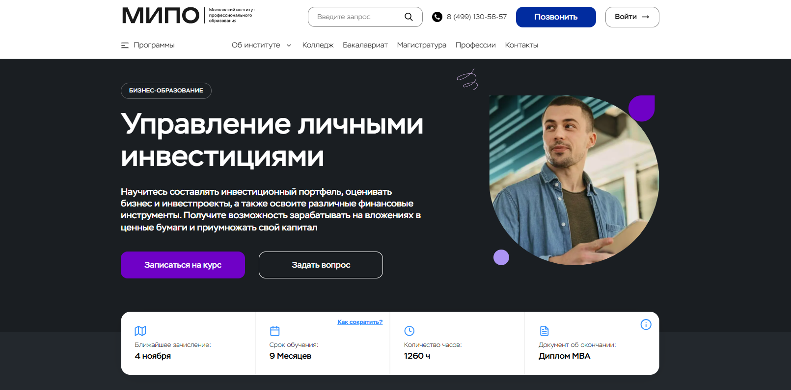- ✅ Официальный сайт: mipo.msk.ru
- 💸 Цена обучения:уточнять при регистрации на сайте (действует скидка 30%).
- 💳 Рассрочка: предоставляется без переплат на весь срок обучения.
- 📚 Формат: дистанционный формат обучения с онлайн-вебинарами, тестами, видеоуроками и поддержкой куратора.
- ⏳ Продолжительность: 9 месяцев, 1260 академических часов.
- 📜 Документ: диплом MBA с внесением данных в Федеральный реестр ФИС-ФРДО и приложением Diploma Supplement.
- 📝 Трудоустройство: выпускники повышают финансовую грамотность и переходят на более высокие должности.
- 🔷 Для кого подходит курс: владельцам бизнеса, начинающим инвесторам, менеджерам проектов и тем, кто хочет грамотно управлять личными финансами и инвестиционными портфелями.
Особенности:
Программа создана для тех, кто стремится развить инвестиционное мышление и освоить современные стратегии инвестирования. Обучение проходит онлайн, что позволяет совмещать процесс с работой и личными делами. Каждый модуль направлен на развитие практических навыков управления капиталом, анализ инвестиционных инструментов и формирование пассивного дохода. Студенты изучают инвестиционные стратегии, принципы управления рисками и оценку инвестиционных проектов. Курс подходит для любого уровня знаний — от новичков до профессиональных инвесторов. Обучение сопровождается персональным куратором, а итогом становится получение официального диплома MBA, котируемого в России и за рубежом.
Чему учатся студенты:
- Оценивать инвестиционные и бизнес-проекты
- Формировать и управлять инвестиционными портфелями
- Проводить инвестиционный анализ и анализ рынка ценных бумаг
- Понимать структуру фондовых рынков и работу финансовых инструментов
- Управлять рисками и выстраивать стратегии пассивных инвестиций
- Анализировать инфополе инвестора и принимать решения на основе данных СМИ
- Использовать торговые приложения и оценивать финансовые активы
Преподаватели:
- Дмитрий Коноплянский — основатель сети ювелирных салонов, советник компаний «НЛМК» и «НК РОСНЕФТЬ»
- Сергей Ряковский — эксперт по стратегическому менеджменту, автор пособий по управлению персоналом
- Траншье Янник — эксперт по инновационному менеджменту и технологический брокер
- Татьяна Баранова — специалист по деловому этикету и протоколу, основатель проекта «Про ЭТИКЕТ»
- Борисов Александр — эксперт по инвестиционному и финансовому анализу
- Додерер Александр — основатель агентства стратегических коммуникаций GRUPPE DREI
Преимущества:
- Официальный диплом MBA с международным приложением
- Возможность вернуть 13% стоимости обучения через налоговый вычет
- Дистанционный формат с удобным графиком обучения
- Обучение у опытных экспертов и практиков инвестиционной сферы
- Актуальный материал, основанный на исследованиях и реальных кейсах
- Индивидуальное сопровождение куратора на всём протяжении курса
- Программа разработана с учётом требований работодателей
Отзывы учеников:
Выпускники МИПО отмечают высокий уровень преподавателей, удобный онлайн-формат и практическую направленность программы. Многие студенты подчеркивают, что после прохождения курса улучшили свои финансовые результаты и повысили уровень инвестиционной грамотности. Отмечают также быструю обратную связь от кураторов и возможность совмещать обучение с работой.
Перейти на официальный сайт курса17. Профессия Инвестиционный аналитик — Skillbox
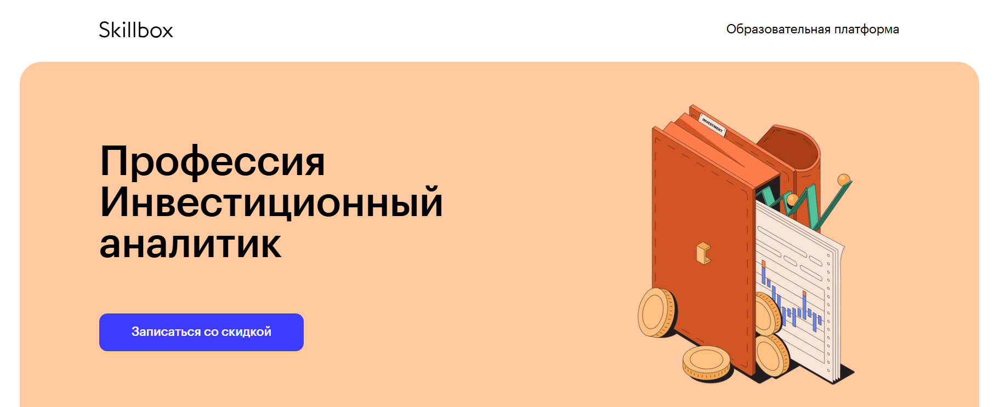- ✅ Официальный сайт: skillbox.ru
- 💸 Цена обучения: от 111 100 ₽ со скидкой до 60%.
- 💳 Рассрочка: от 4 628 ₽/мес на 24 месяца без переплат.
- 📚 Формат: онлайн курсы, видеоуроки, практические задания, тесты и живая обратная связь с экспертами.
- ⏳ Продолжительность: 8 месяцев, включая более 200 видеоматериалов и практику на реальных кейсах.
- 📜 Документ: сертификат установленного образца, государственная лицензия №Л035−1 298−77/179 609.
- 📝 Трудоустройство: стажировка через 3 месяца и официальное трудоустройство через 6 месяцев обучения.
- 🔷 Для кого подходит курс: выпускникам финансовых факультетов, аналитикам, экономистам, математикам и специалистам, желающим освоить управление личными финансами и инвестициями.
Особенности:
Программа даёт возможность изучить основы инвестирования и освоить стратегии успешного управления капиталом. Обучение проходит онлайн в удобном формате, поэтому можно совмещать его с работой. Курс помогает начинающим инвесторам понять структуру фондовых рынков и оценку инвестиционных инструментов. Студенты приобретают практические навыки анализа инвестиционных портфелей и управления рисками. Преподаватели уделяют внимание финансовой грамотности и стратегиям инвестирования, помогая выстроить собственную систему личных инвестиций. Участники получают поддержку кураторов и доступ к профессиональному сообществу. После окончания можно применять знания в сфере инвестиций, финансового анализа и управления активами.
Чему учатся студенты:
- Пониманию основ финансовых рынков и инвестиций
- Проведению инвестиционного анализа компаний и проектов
- Построению и оценке инвестиционных портфелей
- Анализу рынка ценных бумаг и фондовых активов
- Разработке стратегий инвестирования и управления рисками
- Созданию финансовых моделей и инвестиционных оценок
- Презентации инвестиционных проектов и работе с инвесторами
Преподаватели:
- Дмитрий Бородин — инвестиционный директор, кандидат экономических наук, автор курса, 12+ лет опыта, сертификаты CFA и FRM.
- Игорь Внуков — сертифицированный оценщик бизнеса RICS.
- Алексей Смывин — руководитель направления ПФИ, банк «Открытие».
- Екатерина Прозорова — аналитик департамента корпоративных финансов и M&A.
- Артур Халатов — финансовый партнёр Ozon.
- Наталия Крылова — директор департамента экономики и финансового контроля DPD в России.
- Виталий Устименко — финансовый директор Skillbox, член совета директоров MD Medical Group.
Преимущества:
- Гибкий график обучения, возможность учиться в любое удобное время
- Формат обучения онлайн с бессрочным доступом к материалам
- Поддержка кураторов и консультации экспертов рынка
- Развитие инвестиционной грамотности и навыков управления портфелем
- Подготовка к работе в сфере инвестиций и финансовых рынков
- Практика на реальных кейсах с последующим трудоустройством
- Доступ к чату выпускников и постоянным обновлениям программы
- Бонусный курс по заработку на удалёнке и управлению личными финансами
Отзывы учеников:
Студенты отмечают удобный формат онлайн-обучения, поддержку преподавателей и практическую направленность заданий. Отзывы часто подчеркивают доступность материалов и понятные объяснения сложных тем. Многие выпускники довольны полученными знаниями, отмечают рост профессиональных навыков и быстрый карьерный старт после прохождения курса.
Перейти на официальный сайт курса18. Инвестиции в криптовалюты — Skillbox
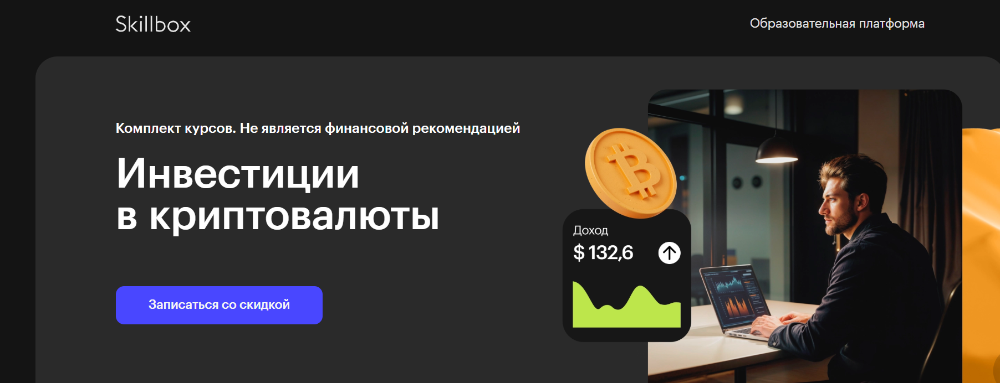- ✅ Официальный сайт: skillbox.ru
- 💸 Цена обучения: от 62 150 ₽, со скидкой 50%.
- 💳 Рассрочка: от 5 179 ₽/мес, доступна на 12 месяцев без переплат.
- 📚 Формат: видеолекции, тесты, домашние задания, проекты и консультации с экспертами.
- ⏳ Продолжительность: 19 часов теории, 12 часов практики, 1 проект.
- 📜 Документ: сертификат о прохождении курса.
- 📝 Трудоустройство: помощь HR-консультанта, создание резюме, подготовка к собеседованиям и доступ к закрытым вакансиям.
- 🔷 Для кого подходит курс: для начинающих инвесторов, желающих изучить основы финансовых рынков, криптовалют и построить стратегию личных инвестиций.
Особенности:
Программа разработана для тех, кто хочет разобраться в теме инвестиций и освоить принципы управления капиталом. Обучение проходит онлайн в удобном формате с возможностью совмещать его с работой. Курс охватывает основы финансовой грамотности, анализ рынка и стратегиях инвестирования. Студенты учатся оценивать риски, разрабатывать инвестиционные стратегии и управлять инвестиционными портфелями. Все материалы доступны в мобильной версии платформы, а кураторы с опытом более пяти лет помогают в освоении практических навыков. Программа построена так, чтобы слушатели смогли научиться инвестировать с нуля и грамотно формировать пассивный доход.
Чему учатся студенты:
- Изучают основы финансовых рынков и принципы работы с финансовыми инструментами
- Осваивают инвестиционные стратегии и методы анализа рынка
- Учaтся формировать и управлять инвестиционными портфелями
- Разбираются в криптовалютах, блокчейне и принципах DeFi
- Осваивают методы оценки инвестиционных рисков и планирования личных финансов
Преподаватели:
- Олег Иванов — венчурный инвестор
- Дмитрий Мишунин — генеральный директор HashEx
- Валерий Скотников — начальник управления по развитию розничных клиентов Московской биржи
- Никита Карташёв — финансовый консультант, ведущий эксперт Школы Московской биржи
Преимущества:
- Пошаговое изучение основ инвестирования и блокчейна с нуля
- Интерактивный формат обучения с тестами и домашними заданиями
- Кураторская поддержка и обратная связь от экспертов
- Возможность составить собственный инвестиционный план под финансовые цели
- Участие в закрытом сообществе инвесторов и обмен опытом
- Доступ к материалам курса в любое удобное время
- Бонус — курс по искусственному интеллекту и скидки на другие программы
- Помощь в трудоустройстве и составлении портфолио
Отзывы учеников:
Выпускники отмечают понятный формат обучения и доступное объяснение сложных тем. Многие выделяют пользу практических заданий, которые помогают закрепить знания и применять их при управлении личными инвестициями. Студенты высоко оценивают качество преподавания и поддержку кураторов, отмечая рост уверенности в сфере инвестиций и навыков анализа финансовых инструментов.
Перейти на официальный сайт курса19. Трейдинг — Skillbox
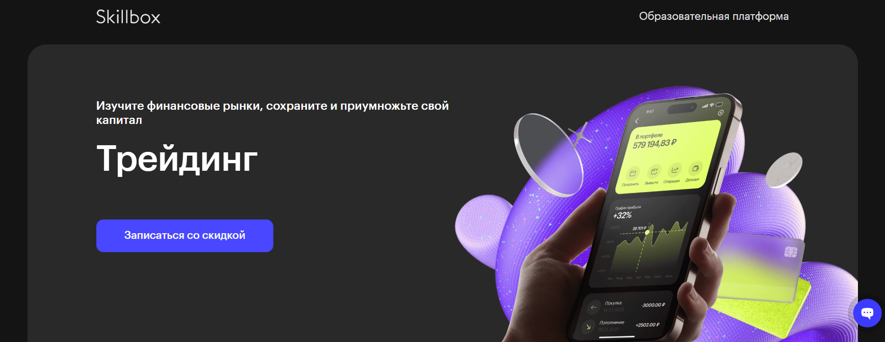- ✅ Официальный сайт: skillbox.ru
- 💸 Цена обучения: от 34 105 ₽ со скидкой до 60%.
- 💳 Рассрочка: от 2 842 ₽/мес, доступна на 18 месяцев без переплат.
- 📚 Формат: онлайн курсы, видеолекции, тесты, практические задания, проект и обратная связь от экспертов.
- ⏳ Продолжительность: 20 часов теории, 12 часов практики, 1 итоговый проект.
- 📜 Документ: сертификат установленного образца, лицензия №Л035−1 298−77/179 609.
- 📝 Трудоустройство: поддержка HR-консультанта, помощь в составлении резюме и поиске работы.
- 🔷 Для кого подходит курс: для начинающих инвесторов, желающих освоить основы инвестирования и трейдинга, а также специалистов, стремящихся развить навыки анализа финансовых рынков.
Особенности:
Программа разработана совместно с инвестиционно-финансовой группой «Финам» и направлена на практическое освоение стратегий инвестирования и трейдинга. Обучение проходит онлайн в удобном формате: студенты изучают видеоматериалы, выполняют домашние задания и получают консультации от опытных инвесторов. Курс помогает развить финансовую грамотность, научиться управлять капиталом и создавать собственные инвестиционные портфели. После завершения обучения слушатели смогут уверенно применять инвестиционные инструменты на фондовых рынках, анализировать риски и формировать стратегии личных инвестиций. Каждый студент получает доступ к чату с трейдером, управляющим капиталом 1,5 млн долларов, что способствует глубокому пониманию процессов управления активами.
Чему учатся студенты:
- Понимать основы инвестирования и управление личными финансами;
- Анализировать рынок ценных бумаг и определять точки входа и выхода из сделок;
- Оценивать инвестиционные риски и управлять капиталом;
- Создавать и корректировать собственные инвестиционные стратегии;
- Формировать инвестиционные портфели и достигать финансовых целей;
- Проводить инвестиционный анализ и принимать решения на основе рыночных данных.
Преподаватели:
- Юлия Афанасьева — главный спикер, сотрудничает с крупнейшими брокерами, среднегодовая доходность более 150%.
- Алексей Чичикин — сертифицированный управляющий ценными бумагами и инвестиционными фондами.
- Людмила Петина — трейдер с опытом более 10 лет.
- Иван Пуховой — квалифицированный специалист по финансовым рынкам.
Преимущества:
- Скидка до 60% и курс по искусственному интеллекту в подарок;
- Поддержка куратора и HR-консультанта на всех этапах обучения;
- Практика торговли с экспертами и доступ к чату с профессиональным трейдером;
- Возможность совмещать обучение с работой — гибкий график обучения;
- Обновленная программа 2025 года с учётом современных реалий финансовых рынков;
- Пожизненный доступ к учебным материалам и чату с экспертами;
- Рассрочка без переплат и налоговый вычет за обучение;
- Подарочный доступ к курсу английского языка на год.
Отзывы учеников:
Студенты отмечают удобный формат обучения, понятные объяснения преподавателей и большое количество практики. Многие хвалят поддержку кураторов и возможность учиться по гибкому графику. Отдельно выделяют реальную пользу от полученных знаний: слушатели после курса начали инвестировать и зарабатывать на фондовых рынках, повысили уверенность в управлении личными инвестициями и финансовыми активами.
Перейти на официальный сайт курса20. Блокчейн и инвестиции — Академия Eduson
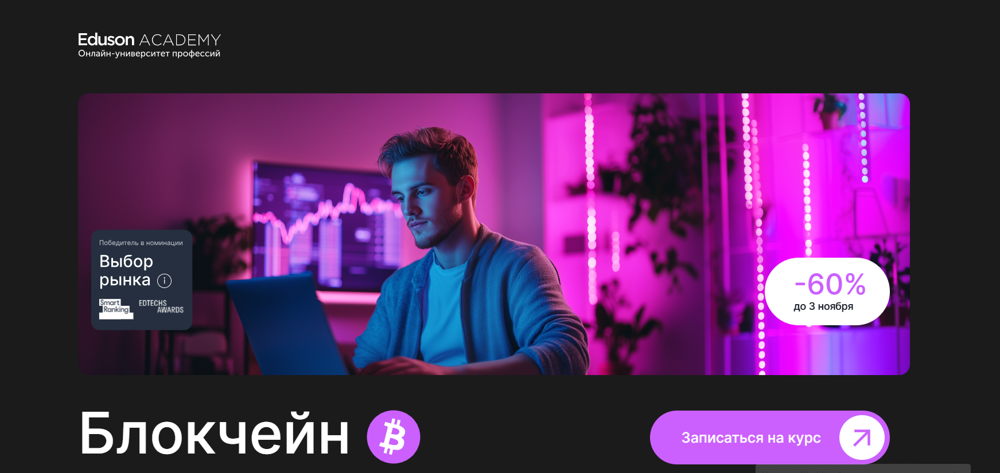- ✅ Официальный сайт: eduson.academy
- 💸 Цена обучения: 99 200 ₽ (действует скидка 12 400 ₽).
- 💳 Рассрочка: беспроцентная рассрочка на 12 месяцев от 8 266 ₽/мес.
- 📚 Формат: онлайн курс с видеолекциями, домашними заданиями, бизнес-кейсами и обратной связью от экспертов.
- ⏳ Продолжительность: 4 месяца.
- 📜 Документ: удостоверение о повышении квалификации установленного образца.
- 📝 Трудоустройство: выпускники получают диплом Академии Eduson, подтверждающий профессиональные навыки и открывающий возможности карьерного роста в сфере инвестиций и блокчейна.
- 🔷 Для кого подходит курс: для начинающих инвесторов, специалистов в сфере финансов, предпринимателей и всех, кто хочет освоить основы инвестирования и управления личными активами.
Особенности:
Обучение проходит в удобном формате: видеолекции, тренажеры и реальные кейсы помогают развить практические навыки управления инвестициями и понять принципы блокчейна. Каждый урок направлен на формирование финансовой грамотности и понимание стратегий инвестирования. Студенты учатся анализировать рынок ценных бумаг и управлять инвестиционным портфелем. Через домашние задания и обратную связь от преподавателей слушатели смогут развить уверенность в управлении капиталом и личными финансами. Академия Eduson предоставляет постоянный доступ к материалам и обновлениям, а также поддержку куратора на протяжении года. По завершении курса выпускники получают документ о повышении квалификации и делают первые шаги в трейдинге криптовалют.
Чему учатся студенты:
- Изучают основы инвестирования и управления активами
- Осваивают инвестиционные стратегии и анализ рынка
- Понимают, как формировать инвестиционные портфели
- Научатся оценивать инвестиционные проекты и минимизировать риски
- Разбираются в децентрализованных финансах (DeFi) и блокчейн-технологиях
- Получают навыки инвестирования в криптовалютные и фондовые рынки
Преподаватели:
- Команда практикующих экспертов Eduson: специалисты по инвестиционному анализу, блокчейн-технологиям и финансовым инструментам с опытом работы на фондовых и криптовалютных рынках.
Преимущества:
- Доступ к курсу и обновлениям навсегда
- Поддержка куратора и проверка домашних заданий
- Практика через бизнес-кейсы и онлайн-тренажеры
- Удостоверение о повышении квалификации после завершения
- Возможность оформить налоговый вычет 13% от стоимости обучения
- Гибкий график обучения и возможность проходить курс в любое удобное время
- Развитие инвестиционной грамотности и навыков управления рисками
Отзывы учеников:
Студенты отмечают высокий уровень преподавателей и понятный формат обучения. Особенно выделяют практические задания, которые помогают разобраться в теме инвестиций и научиться применять знания в реальной работе. Многие упоминают удобный график и возможность учиться без строгих дедлайнов, что делает курс комфортным даже для занятых людей.
Перейти на официальный сайт курса21. Инвестиционный анализ: эффективное управление инвестициями — Moscow Business School
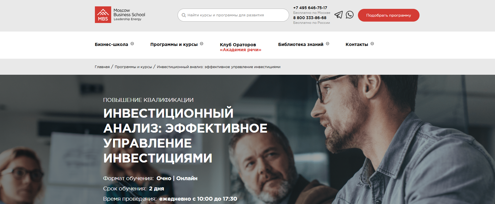- ✅ Официальный сайт: mbschool.ru
- 💸 Цена обучения: 43 900 ₽ при оплате онлайн (скидка 10%).
- 💳 Рассрочка: доступна для физических и юридических лиц от 1 829 ₽/мес.
- 📚 Формат: очно и онлайн; видеолекции, практические задания, финансовые расчёты, кейсы и консультации экспертов.
- ⏳ Продолжительность: 2 дня, ежедневно с 10:00 до 17:30.
- 📜 Документ: удостоверение о повышении квалификации или сертификат Moscow Business School.
- 📝 Трудоустройство: повышение квалификации способствует карьерному росту, 85% выпускников получают повышение в течение года.
- 🔷 Для кого подходит курс: для специалистов в сфере инвестиций, начинающих инвесторов и руководителей, желающих развить навыки анализа и управления капиталом.
Особенности:
Программа направлена на развитие практических навыков в управлении инвестиционными проектами и финансовыми активами. Обучение проходит в удобном формате — очно или онлайн, что позволяет гибко планировать график обучения. Курс раскрывает основы инвестирования и помогает изучить стратегии инвестирования и инвестиционные инструменты, необходимые для успешного управления личными финансами и инвестиционными портфелями. Участники узнают, как оценивать инвестиционные проекты, анализировать риски и доходность, а также принимать грамотные управленческие решения. Программа одинаково полезна как для профессиональных инвесторов, так и для тех, кто только начинает разбираться в теме инвестиций. После окончания курса слушатели смогут применять полученные знания при построении собственных стратегий инвестирования и в работе на финансовых рынках.
Чему учатся студенты:
- Проводить анализ финансовой отчетности и инвестиционных проектов
- Рассчитывать показатели эффективности: срок окупаемости, NPV, IRR, рентабельность инвестиций
- Оценивать инвестиционную привлекательность и риски проектов
- Использовать финансовые инструменты и модели для принятия решений
- Понимать принципы управления инвестиционными портфелями и активами
Преподаватели:
- Аверичева Елена Александровна — бизнес-тренер, эксперт-практик в области налогообложения, бухгалтерского и управленческого учета, финансовых аудитов и антикризисного управления (рейтинг 9.5).
Преимущества:
- Обучение проходит онлайн или очно, в зависимости от формата обучения
- Сертификаты признаются ведущими работодателями финансового сектора
- Обучение ведут эксперты-практики с опытом более 5 лет
- Гибкий график обучения и возможность адаптации под корпоративные цели
- Практические кейсы и работа с реальными примерами инвестиционных проектов
- Развитие инвестиционной грамотности и уверенности в управлении личными инвестициями
Отзывы учеников:
Выпускники отмечают практическую направленность занятий, доступное объяснение сложных тем и профессионализм преподавателей. Особенно ценят возможность изучить реальные примеры из сферы инвестиций и научиться рассчитывать финансовые показатели, необходимые для успешного инвестирования и управления капиталом.
Перейти на официальный сайт курса22. Личные финансы: инвестиции и трейдинг — Skillbox
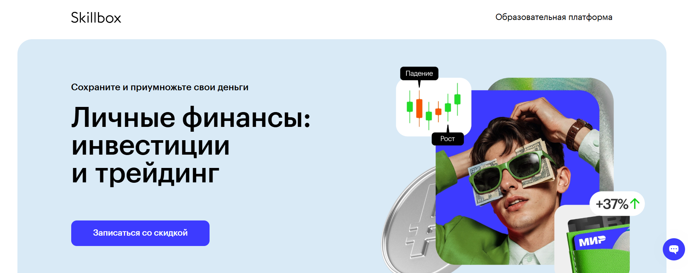- ✅ Официальный сайт: skillbox.ru
- 💸 Цена обучения: от 104 580 ₽ (скидка до 60%).
- 💳 Рассрочка: от 2 905 ₽/мес до 36 месяцев без переплат.
- 📚 Формат: онлайн курсы с видеолекциями, практическими заданиями, шаблонами, чек-листами и поддержкой экспертов.
- ⏳ Продолжительность: 5 месяцев.
- 📜 Документ: сертификат установленного образца (гослицензия № Л035−1 298−77/179 609).
- 📝 Трудоустройство: поддержка студентов, возможность консультаций и помощи в карьерном росте.
- 🔷 Для кого подходит курс: для начинающих инвесторов, желающих изучить основы инвестирования, управления капиталом и создания пассивного дохода.
Особенности:
Программа подойдёт тем, кто хочет повысить финансовую грамотность и освоить личные инвестиции с нуля. Обучение проходит в удобном формате — онлайн, по гибкому графику обучения. Студенты изучают инвестиционные инструменты, стратегии инвестирования и получают навыки анализа фондовых рынков. Курс включает материалы от Московской биржи и группы «Финам», что гарантирует практическую пользу и актуальные знания. Преподаватели — опытные эксперты, которые объясняют сложные темы простым языком. К концу программы слушатели смогут сформировать инвестиционный портфель, управлять рисками и уверенно ориентироваться в сфере инвестиций.
Чему учатся студенты:
- Разрабатывать личные финансовые стратегии и инвестиционные портфели
- Понимать работу фондовых рынков и выбирать надёжные финансовые инструменты
- Проводить инвестиционный анализ и оценку доходности активов
- Создавать планы пассивных инвестиций и управления личными финансами
- Использовать индивидуальный инвестиционный счёт и получать налоговые вычеты
- Работать с брокерскими платформами и торговыми приложениями
- Контролировать риски и принимать решения на основе анализа рынка ценных бумаг
Преподаватели:
- Денис Дергачёв — Управляющий директор транзакционного бизнеса ПАО КБ «УБРиР»
- Юлия Чиндина — Эксперт по личным финансам, финансовый консультант
- Анна Деньгина — Сооснователь сервиса «Финансовое здоровье» Национального центра по финансовой грамотности
- Алексей Чичикин — Сертифицированный управляющий ценными бумагами и фондами
- Юлия Афанасьева — Биржевой тренер, автор торговых стратегий
- Ирина Фомкина — Руководитель аналитической поддержки ITI Capital, спикер ЦБ РФ
- Валентина Савенкова — Трейдер, технический аналитик, эксперт в инвестициях
Преимущества:
- Совместная программа с Московской биржей и «Финам»
- Поддержка опытных наставников и проверка домашних заданий
- Доступ к материалам и комьюнити инвесторов
- Пошаговые инструкции по созданию инвестиционного портфеля
- Обновлённая программа 2025 года с учётом изменений на рынке
- Бонусный курс по искусственному интеллекту в подарок
- Реальные кейсы и регулярная практика на инвестиционном рынке
- Скидка до 60% и рассрочка на обучение
Отзывы учеников:
Студенты отмечают доступное объяснение сложных тем, поддержку преподавателей и практический формат обучения. Среди плюсов чаще всего выделяют полезные чек-листы, реальные кейсы и возможность сразу применять знания для увеличения доходов. 93% выпускников отмечают, что курс помог достичь финансовых целей, а 78% готовы рекомендовать обучение другим.
Перейти на официальный сайт курса23. Личные инвестиции с нуля — Академия Eduson
- ✅ Официальный сайт: eduson.academy
- 💸 Цена: от 19 930 ₽ со скидкой 60%.
- 💳 Рассрочка: 12 месяцев без процентов — 1 661 ₽/мес.
- 📚 Формат: онлайн курсы, видеоуроки, практические задания, тесты, поддержка личного куратора.
- ⏳ Продолжительность: свободный график обучения, можно проходить в любое удобное время.
- 📜 Документ: официальный сертификат об окончании курса.
- 📝 Трудоустройство: консультации по построению личной инвестиционной стратегии и развитию финансовых навыков.
- 🔷 Для кого подходит курс: для начинающих инвесторов, желающих освоить основы инвестирования и управления личными финансами.
Особенности:
Обучение проходит онлайн в удобном формате, что позволяет изучать тему инвестиций в собственном темпе. Курс помогает развить навыки управления инвестициями и освоить стратегическое планирование личных финансов. Студенты изучают принципы оценки инвестиционных инструментов и строят индивидуальные инвестиционные стратегии. Личный куратор помогает анализировать рынок и формировать диверсифицированный инвестиционный портфель. Программа обучения направлена на развитие финансовой грамотности и умение работать с инвестиционными рисками. Доступ к материалам остаётся навсегда, а обновления предоставляются бесплатно. Курс помогает новичкам сделать первые шаги в сфере инвестиций и перейти к формированию пассивных доходов.
Чему учатся студенты:
- Анализировать рынок ценных бумаг и оценивать инвестиционные инструменты
- Понимать основы инвестирования и особенности фондовых рынков
- Применять методы технического и фундаментального анализа
- Формировать инвестиционные портфели с учетом личных финансовых целей
- Управлять рисками и доходностью активов
- Разрабатывать индивидуальные инвестиционные стратегии
- Оценивать перспективы вложений в недвижимость, валюту и драгоценные металлы
Преподаватели:
- Эксперты Академии Eduson — специалисты в сфере финансов и инвестиций, практикующие аналитики фондовых рынков.
- Кураторы с опытом управления портфельными инвестициями и разработки индивидуальных инвестиционных стратегий.
Преимущества:
- Доступный формат обучения — можно проходить курс онлайн в любое удобное время
- Регулярные бесплатные обновления материалов и бессрочный доступ к платформе
- Личный куратор на весь период обучения и поддержки
- Практические задания для формирования инвестиционного портфеля
- Возможность вернуть 13% от стоимости обучения через налоговый вычет
- Подходит для начинающих инвесторов без опыта и базовых знаний
- Фокус на управлении личными инвестициями и финансовыми активами
- Реальные примеры инвестирования и анализ фондового рынка РФ
Отзывы учеников:
Студенты Академии Eduson отмечают практическую направленность программы, доступную подачу материала и поддержку кураторов. По отзывам, курс помогает разобраться в стратегиях инвестирования, управлении капиталом и составлении личных инвестиционных планов. Начинающие инвесторы отмечают рост финансовой грамотности и уверенность в принятии решений. Многие выпускники после прохождения курса начали активно инвестировать и получать стабильный пассивный доход.
Перейти на официальный сайт курса24. Личные финансы и инвестиции: как вложить деньги без ошибок — Нетология
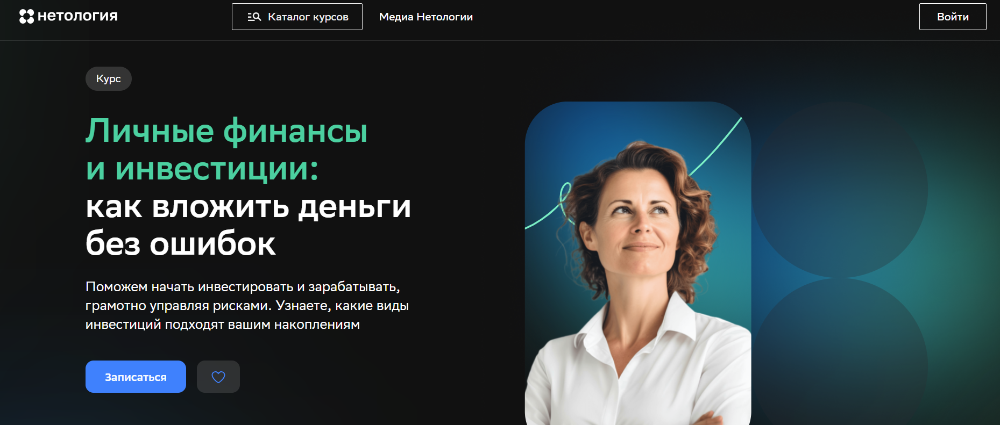- ✅ Официальный сайт: netology.ru
- 💸 Цена обучения: 12 800 ₽ (скидка 45%, старая цена — 24 561 ₽).
- 💳 Рассрочка: от 1 125 ₽/мес, без переплат до 24 месяцев, оформление онлайн за 5 минут.
- 📚 Формат: видеозаписи, домашние задания, тест и вебинар в записи.
- ⏳ Продолжительность: 10 часов обучения, доступ к материалам — 1 год.
- 📜 Документ: свидетельство о прохождении курса.
- 📝 Трудоустройство: возможность получения налогового вычета 13%, помощь в выборе следующего курса по инвестициям.
- 🔷 Для кого подходит курс: для начинающих инвесторов, тех, кто хочет накопить на крупные цели или обеспечить пассивный доход к пенсии.
Особенности:
Программа обучения разработана для тех, кто хочет разобраться в управлении личными финансами и повысить уровень инвестиционной грамотности. Обучение проходит в онлайн-формате с удобным графиком обучения, что позволяет проходить курс в любое удобное время. Курс помогает изучить основы инвестирования, принципы управления рисками и подходы к формированию инвестиционных портфелей. Студенты узнают, как оценивать финансовые инструменты, выбирать стратегии инвестирования и формировать личный капитал. Программа подходит для всех уровней знаний — от новичков до тех, кто уже занимается инвестициями. Благодаря практическим примерам и простым объяснениям эксперт показывает, как избежать ошибок при вложении средств. После прохождения курса слушатели смогут применять знания на фондовых рынках и принимать грамотные решения в сфере инвестиций.
Чему учатся студенты:
- Разбираться в видах финансовых инструментов: акции, облигации, недвижимость
- Понимать основы инвестирования и способы управления личными финансами
- Составлять индивидуальный инвестиционный портфель и выбирать стратегию вложений
- Анализировать риски и принимать решения по управлению капиталом
- Изучать тему пассивных инвестиций и способы получения дополнительного дохода
Преподаватели:
- Сергей Спирин — инвестор, финансовый консультант, основатель проектов «Центр финансового образования», finwebinar.ru и assetallocation.ru. Опыт в сфере инвестиций более 25 лет, член совета Национальной ассоциации специалистов финансового планирования.
Преимущества:
- Гибкий формат обучения — можно изучать материалы в любое удобное время
- Практические задания и примеры для начинающих инвесторов
- Подробное объяснение стратегий инвестирования и формирования инвестиционного портфеля
- Возможность обучаться онлайн без ограничений по месту проживания
- Доступ к материалам и тестам в течение года
- Скидки до 65% в период акций и налоговый вычет после завершения курса
Отзывы учеников:
Выпускники отмечают доступную подачу материала и практическую пользу занятий. Студенты пишут, что после курса научились контролировать личные финансы, открыли брокерские счета и начали формировать собственные инвестиционные портфели. Многие отмечают простоту объяснений преподавателя и удобный онлайн-формат обучения.
Перейти на официальный сайт курсаКто такой инвестор?
Инвестор — это человек или организация, вкладывающая собственные или привлеченные средства в различные активы с целью получения прибыли. Инвесторы играют ключевую роль в экономике, так как именно их капитал помогает компаниям развиваться, запускать новые проекты и создавать рабочие места. Инвестиции могут быть как краткосрочными, так и долгосрочными, в зависимости от стратегии и уровня риска, который готов принять инвестор.
Что делают инвесторы и чем они занимаются?
Главная деятельность инвестора заключается в анализе рынка и выборе подходящих активов для вложения. Это может быть покупка акций, облигаций, недвижимости, стартапов или криптовалют. В зависимости от типа инвестора, подход к управлению капиталом может отличаться.
- Частные инвесторы — самостоятельно управляют своими сбережениями и принимают решения о покупке активов.
- Институциональные инвесторы — это банки, пенсионные фонды, страховые компании, которые инвестируют крупные суммы от имени клиентов.
- Венчурные инвесторы — вкладывают средства в стартапы и инновационные компании, ожидая высокий доход при успешном развитии бизнеса.
Инвесторы также анализируют финансовые отчеты, следят за экономическими тенденциями и диверсифицируют портфель для снижения рисков.
Что должен знать и уметь инвестор?
Чтобы успешно управлять капиталом, инвестору необходимо обладать рядом знаний и навыков. Без грамотного анализа и стратегии невозможно достичь стабильного дохода.
- Финансовая грамотность — понимание основ экономики, инвестирования, налогообложения и риск-менеджмента.
- Аналитическое мышление — умение оценивать компании, читать финансовые отчеты, анализировать графики и рыночные тенденции.
- Стратегическое планирование — формирование долгосрочных целей, управление портфелем и распределение активов.
- Психологическая устойчивость — способность принимать взвешенные решения даже в периоды волатильности и кризисов.
Инвестор также должен уметь использовать современные инструменты — торговые платформы, аналитические сервисы и финансовые приложения.
Виды инвесторов
В зависимости от целей и стратегии поведения на рынке, инвесторов делят на несколько категорий:
- Консервативные — минимизируют риски, предпочитают облигации, депозиты и недвижимость.
- Умеренные — комбинируют низко- и среднерисковые активы, стремясь к стабильной доходности.
- Агрессивные — готовы рисковать ради высокой прибыли, инвестируют в акции, стартапы, криптовалюты.
Каждый инвестор выбирает стратегию исходя из личных целей, финансовых возможностей и уровня толерантности к риску.
Востребованность и зарплаты инвесторов в России
Сфера инвестиций активно развивается в России. Все больше частных и институциональных инвесторов выходят на рынок. Востребованность специалистов по инвестициям, финансовых аналитиков и управляющих активами растет каждый год. Средний доход напрямую зависит от уровня опыта, капитала и эффективности стратегий.
- Начинающие инвесторы — могут зарабатывать от 50 000 до 100 000 рублей в месяц.
- Профессиональные управляющие — получают от 150 000 до 300 000 рублей.
- Успешные частные инвесторы — доход может достигать нескольких миллионов рублей в год при грамотном управлении капиталом.
Спрос на финансовых специалистов стабильно высокий, особенно в банках, инвестиционных компаниях и консалтинговых агентствах.
Как стать инвестором и где учиться?
Стать инвестором может каждый, кто готов изучать финансовые рынки и работать с капиталом. Начать можно с малого — открыть брокерский счет, ознакомиться с инвестиционной литературой и пробовать свои силы на демо-счетах.
- Получить образование по направлениям «Финансы и кредит», «Экономика», «Инвестиционный анализ».
- Проходить онлайн-курсы от ведущих брокеров и финансовых школ.
- Изучать книги по инвестициям: Уоррен Баффет, Бенджамин Грэм, Питер Линч.
- Следить за экономическими новостями и аналитикой фондового рынка.
Также важно развивать навыки управления рисками и формировать собственную стратегию инвестирования, основанную на личных целях.
Ошибки начинающих инвесторов
Многие новички совершают одинаковые ошибки, которые приводят к убыткам. Знание этих ошибок поможет избежать финансовых потерь.
- Инвестирование без четкой цели и стратегии.
- Игнорирование диверсификации портфеля.
- Эмоциональные решения под влиянием новостей и паники.
- Отсутствие анализа и слепое следование советам из интернета.
- Непонимание рисков и переоценка потенциальной прибыли.
Инвестор — это не просто человек, вкладывающий деньги, а стратег, аналитик и психолог в одном лице. Чтобы добиться успеха в этой сфере, нужно постоянно учиться, анализировать и действовать осознанно. Инвестиции — это не быстрый заработок, а путь к финансовой независимости и устойчивому благополучию.
Сегодня каждый может стать инвестором — главное начать с малого и развиваться в этом направлении шаг за шагом.
Что включает в себя обучение по инвестициям?
Обучение инвестициям — это комплексная программа, направленная на развитие инвестиционной грамотности, понимание финансовых инструментов и стратегий инвестирования. В процессе изучения темы инвестиций слушатели знакомятся с основами инвестирования, учатся формировать инвестиционные портфели, анализировать финансовые рынки и управлять личными финансами. Программы включают как теоретические знания, так и практические навыки, что помогает начинающим инвесторам уверенно действовать на рынке.
Как выбрать подходящий формат обучения на инвестора в нуля?
Выбор формата обучения зависит от целей и уровня подготовки. Для начинающих инвесторов подойдут онлайн курсы в удобном формате с гибким графиком обучения. Те, кто уже знаком с основами финансовой грамотности, могут пройти углублённые курсы по управлению инвестициями или оценке инвестиционных проектов. Также доступны индивидуальные программы, где обучение проходит с наставником-практиком.
Сколько длится обучение по инвестициям?
Срок обучения зависит от формата и уровня программы. Базовые курсы инвестирования для начинающих длятся от 1 до 3 месяцев обучения, а углубленные программы для профессиональных инвесторов — до 6 месяцев. При этом онлайн обучение проходит в любое удобное время, а график обучения можно подстроить под личный распорядок.
Можно ли пройти бесплатное обучение по управлению финансами и инвестициям?
Да, существует множество бесплатных курсов по инвестициям, которые помогают освоить основы инвестирования, изучить финансовые инструменты и понять принципы управления капиталом. Такие программы часто предоставляют брокеры, финансовые платформы или академии инвестиций. Они дают старт для дальнейшего профессионального развития в сфере инвестиций.
Что изучают начинающие инвесторы на курсах?
Начинающие инвесторы изучают базовые знания о фондовых и финансовых рынках, типах активов — акциях, облигациях, фондах, недвижимости. Также особое внимание уделяется управлению рисками, формированию инвестиционных стратегий и пониманию пассивных инвестиций, которые приносят стабильный пассивный доход без активного участия.
Как обучающие курсы по инвестициям помогают в личных финансах?
Обучение инвестициям напрямую связано с развитием финансовой грамотности. Оно помогает грамотно распределять личные доходы, ставить финансовые цели, формировать инвестиционный портфель и управлять личными активами. После прохождения курса слушатели начинают лучше понимать, как работают финансовые инструменты и как ими управлять для достижения стабильного дохода.
Какие существуют стратегии инвестирования?
Стратегии инвестирования делятся на активные и пассивные. Активные требуют постоянного анализа рынка ценных бумаг, оценки инвестиционных рисков и принятия решений о покупке или продаже активов. Пассивные инвестиции направлены на долгосрочный рост капитала за счёт стабильного набора инструментов, таких как индексные фонды или облигации. Обучение помогает выбрать подходящую стратегию под цели и уровень риска инвестора.
Как проходит онлайн-обучение по инвестированию?
Онлайн курсы по инвестициям проходят в интерактивном формате: видеолекции, практические задания, тесты, живые сессии с преподавателями и кейсы. Такой формат удобен тем, что обучение проходит в любое удобное время и с любого устройства. Многие школы предоставляют доступ к образовательным материалам и после завершения курса, чтобы студенты могли повторять материал.
Чему можно научиться на курсах по финансовому анализу и инвестированию?
Курсы по инвестиционному анализу помогают освоить навыки анализа финансовых активов, оценку инвестиционных проектов и формирование инвестиционных стратегий. Участники изучают методы анализа рынка, показатели стоимости акций и облигаций, учатся определять потенциальную доходность и риски. Это важный шаг для тех, кто стремится стать успешным инвестором.
Какую роль играет инвестиционная грамотность?
Инвестиционная грамотность — это способность принимать осознанные финансовые решения, понимать риски и возможности различных финансовых инструментов. Обучение инвестициям развивает эти навыки, формируя основу для уверенного управления капиталом и успешного инвестирования в будущем.
Какие инвестиционные инструменты изучаются на курсах?
В рамках программ по инвестициям изучаются основные инвестиционные инструменты: акции, облигации, ETF, недвижимость, фонды, криптовалюты. Участники узнают, как оценивать их доходность, риски и перспективы. Также рассматриваются портфельные инвестиции и диверсификация — ключевые принципы, позволяющие снизить риск и повысить стабильность дохода.
Что такое управление инвестициями и капиталом?
Управление инвестициями — это процесс подбора, анализа и контроля активов с целью достижения финансовых целей. Оно включает управление портфелем, рисками, оценку инвестиционных проектов и планирование стратегии роста капитала. Обучение помогает освоить эти процессы и применять их для эффективного управления личными средствами.
Как обучение помогает начинающим инвесторам избежать ошибок?
Многие начинающие инвесторы совершают типичные ошибки — покупают активы без анализа, неправильно оценивают риски или не формируют инвестиционный портфель. Обучение инвестициям помогает избежать этих ошибок, так как слушатели изучают реальные кейсы, получают практические навыки и учатся думать как профессиональные инвесторы.
Какие преимущества у платных и бесплатных курсов по инвестициям?
Бесплатные курсы дают возможность изучить основы инвестирования и понять принципы работы финансовых рынков. Платные программы обычно включают персональное сопровождение, практические задания и более глубокие модули по управлению инвестициями и управлению рисками. Они подходят тем, кто хочет развиваться в сфере инвестиций профессионально.
Какое образование нужно, чтобы стать успешным инвестором?
Чтобы стать успешным инвестором, не обязательно иметь финансовое образование. Достаточно пройти качественное обучение инвестициям, изучить основы финансовой грамотности и научиться анализировать рынок. Важны практика, системное мышление и умение использовать инвестиционные стратегии на реальных данных. Многие успешные инвесторы начинали с онлайн курсов и постепенно достигли высокого уровня профессионализма.
Какие результаты получают студенты после прохождения курса?
После того как участники прошли обучение, они получают не только сертификаты, но и реальные навыки: умеют формировать инвестиционный портфель, выбирать финансовые инструменты, управлять рисками и планировать финансовые цели. Многие выпускники начинают самостоятельно инвестировать, увеличивать доход и формировать пассивный доход.
Можно ли совместить обучение по инвестициям с работой?
Да, обучение инвестициям легко совмещается с основной деятельностью. Онлайн курсы и гибкий график обучения позволяют проходить занятия в любое удобное время. Многие студенты отмечают, что обучение проходит комфортно и не требует отрыва от работы, что делает процесс эффективным и доступным.
------------------------------------------------
Реклама. Информация о рекламодателе по ссылкам в статье.